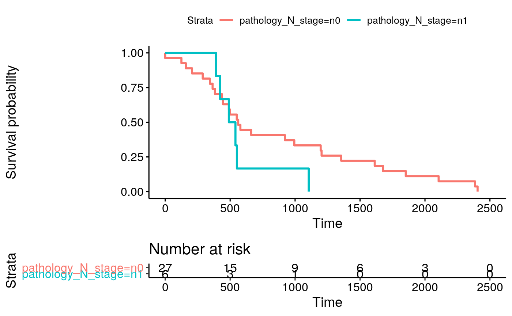
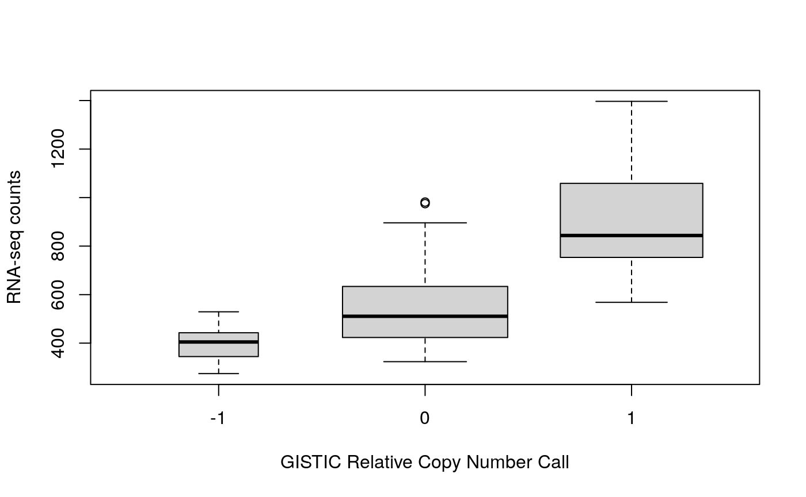

MultiAssayExperiment: Integrative workflow for public multi-omics data
Marcel Ramos
Roswell Park Comprehensive Cancer Center, Buffalo, NYLudwig Geistlinger
CUNY School of Public Health, New York, NYLevi Waldron
CUNY School of Public Health, New York, NYJune 05, 2020
Source:vignettes/Ramos_MultiAssayExperiment.Rmd
Ramos_MultiAssayExperiment.RmdMulti-omic Integration and Analysis of cBioPortal and TCGA data with MultiAssayExperiment
Instructor names and contact information
- Marcel Ramos1 2 (marcel.ramos@roswellpark.org)
- Ludwig Geistlinger3
- Levi Waldron4
Workshop Description
This workshop demonstrates data management and analyses of multiple assays associated with a single set of biological specimens, using the MultiAssayExperiment data class and methods. It introduces the facilities made available by companion packages, cBioPortalData, curatedTCGAData, and TCGAutils to work with publicly available multi-omic data. Using the MultiAssayExperiment class, these packages make the management of multiple assays easier and more efficient. The workshop also covers, to a limited extent, relevant data classes such as SummarizedExperiment and RangedSummarizedExperiment, which provide efficient and powerful operations for representation of copy number, mutation, variant, and expression data that are represented by different genomic ranges for each specimen.
Pre-requisites
- Basic knowledge of R
- Familiarity with the GRanges and SummarizedExperiment classes
- Familiarity with ’omics data types including copy number and gene expression
Workshop Participation
Participants will have a chance to build a MultiAssayExperiment object from scratch, and will also work with data and interfaces from the the curatedTCGAData and cBioPortalData packages.
R/Bioconductor packages used
First, please make sure you have the latest Bioconductor release version 3.11. See Bioconductor installation instructions:
if (!requireNamespace("BiocManager", quietly = TRUE)) install.packages("BiocManager") ## Bioconductor 3.11 Stable Release BiocManager::install(version = "3.11")
- MultiAssayExperiment
- GenomicRanges
- RaggedExperiment
- curatedTCGAData
- cBioPortalData
- SummarizedExperiment
- TCGAutils
- UpSetR
- AnnotationFilter
- EnsDb.Hsapiens.v86
- survival
- survminer
- pheatmap
library(MultiAssayExperiment) library(GenomicRanges) library(RaggedExperiment) library(curatedTCGAData) library(cBioPortalData) library(GenomicDataCommons) library(SummarizedExperiment) library(SingleCellExperiment) library(TCGAutils) library(UpSetR) library(mirbase.db) library(AnnotationFilter) library(EnsDb.Hsapiens.v86) library(survival) library(survminer) library(pheatmap) library(readxl) library(readr) library(kableExtra)
Time outline
1h 45m total
| Activity | Time |
|---|---|
| Overview of key data classes | 25m |
Building a MultiAssayExperiment from scratch |
10m |
| Creating and importing TCGA multi-assay datasets | 10m |
| Subsetting and reshaping multi-assay data | 20m |
| Plotting, correlation, and other analyses | 20m |
Introduction to curatedTCGAData, cBioPortalData, and TCGAutils
|
20m |
Workshop goals and objectives
Learning goals
- overview common data classes available in Bioconductor
- understand appropriate data structures for different ’omics data types
- identify advantages of providing integrative data in an analysis-ready platform
- gain familiarity with
cBioPortalDataandcuratedTCGAData - explore available functionality in
TCGAutilsfor the management and coordination of multi-omic data
Learning objectives
- use
curatedTCGADataandcBioPortalDatato create on-the-fly multi-omics data objects - apply knowlege of
MultiAssayExperimentto represent other multi’omics data - understand basic data management techniques with MultiAssayExperiment such as subsetting, reshaping, growing, and extraction
- adapt
MultiAssayExperimentdata with packages for differential expression, machine learning, and plotting
Overview of key packages and data classes
Packages
MultiAssayExperiment
The MultiAssayExperiment package provides an integrative representation for multi-omics data on a set of samples. Modelled after the SummarizedExperiment representation for expression data, the MultiAssayExperiment data container provides efficient and easy-to-use operations for manipulating multiple sets of data such as copy number alterations, mutations, proteomics, methylation, and other types of data. Compatibility with the MultiAssayExperiment container hinges on a small set of requirements making the data representation flexible to many of the currently available Bioconductor classes.

MultiAssayExperiment object schematic
cBioPortalData
The cBioPortalData package provides an R/Bioconductor interface to cBioPortal data. The cBioPortalData package makes use of the revamped API and provides an internal caching mechanism to avoid re-querying the API. It allows users to download data from https://cBioPortal.org through customized queries that are handled for the user in the background. We provide an easy to use interface that requires minimal knowledge of the cBioPortal data model and API.
First create an API object to be able to query the website:
cbio <- cBioPortal() cbio
## service: cBioPortal
## tags(); use cbioportal$<tab completion>:
## # A tibble: 70 x 3
## tag operation summary
## <chr> <chr> <chr>
## 1 Cancer Types getAllCancerTypesUsing… Get all cancer types
## 2 Cancer Types getCancerTypeUsingGET Get a cancer type
## 3 Clinical At… fetchClinicalAttribute… Fetch clinical attributes
## 4 Clinical At… getAllClinicalAttribut… Get all clinical attributes in the spec…
## 5 Clinical At… getAllClinicalAttribut… Get all clinical attributes
## 6 Clinical At… getClinicalAttributeCo… Get counts for clinical attributes acco…
## 7 Clinical At… getClinicalAttributeIn… Get specified clinical attribute
## 8 Clinical Da… fetchAllClinicalDataIn… Fetch clinical data by patient IDs or s…
## 9 Clinical Da… fetchClinicalDataUsing… Fetch clinical data by patient IDs or s…
## 10 Clinical Da… getAllClinicalDataInSt… Get all clinical data in a study
## # … with 60 more rows
## tag values:
## Cancer Types, Clinical Attributes, Clinical Data, Clinical Events,
## Copy Number Segments, Discrete Copy Number Alterations, Gene Panels,
## Generic Assays, Genes, Molecular Data, Molecular Profiles, Mutations,
## Patients, Reference Genome Genes, Resource Data, Resource
## Definitions, Sample Lists, Samples, Structural Variants, Studies
## schemas():
## AlleleSpecificCopyNumber, CancerStudy, CancerStudyTags,
## ClinicalAttribute, ClinicalAttributeCount
## # ... with 51 more elementsTo see what studies are available from the cBioPortal, use getStudies on the cbio API object:
knitr::kable(getStudies(cbio), align = "l", escape = FALSE, caption = "List of available studies from the cBioPortal") %>% kableExtra::kable_styling( bootstrap_options = c("hover", "striped", "responsive"), full_width = FALSE )
| name | shortName | description | publicStudy | pmid | citation | groups | status | importDate | allSampleCount | studyId | cancerTypeId | referenceGenome |
|---|---|---|---|---|---|---|---|---|---|---|---|---|
| Cholangiocarcinoma (National Cancer Centre of Singapore, Nat Genet 2013) | Cholangiocarcinoma (NCCS) | Exome sequencing of 15 cholangiocarcinoma cases. | TRUE | 24185513 | Chan-on et al. Nat Genet 2013 | PUBLIC | 0 | 2019-02-14 00:00:00 | 15 | chol_nccs_2013 | chol | hg19 |
| Cutaneous T Cell Lymphoma (Columbia U, Nat Genet 2015) | CTCL (Columbia 2015) | Whole-Exome Sequencing (WXS) of tumor-normal sample pairs from 25 patients with Sezary Syndrome and 17 patients with other Cutaneous T Cell Lymphoma (CTCLs). | TRUE | 26551667 | Da Silva Almeida et al. Nat Genet 2015 | 0 | 2019-02-15 00:00:00 | 43 | ctcl_columbia_2015 | nhl | hg19 | |
| Esophageal Squamous Cell Carcinoma (UCLA, Nat Genet 2014) | ESCC (UCLA 2014) | Whole exome sequencing (WXS) or targeted deep sequencing (TDS) of 139 paired esophageal squamous cell carcinoma patients. | TRUE | 24686850 | Lin et al. Nat Genet 2014 | PUBLIC | 0 | 2019-02-19 00:00:00 | 139 | escc_ucla_2014 | escc | hg19 |
| Oral Squamous Cell Carcinoma (MD Anderson, Cancer Discov 2013) | Head & neck (MDA) | Comprehensive profiling of 40 oral squamous cell carcinoma tumor/normal sample pairs. | TRUE | 23619168 | Pickering et al. Cancer Discov 2013 | 0 | 2019-02-19 00:00:00 | 40 | hnsc_mdanderson_2013 | hnsc | hg19 | |
| Hepatocellular Carcinomas (INSERM, Nat Genet 2015) | HCC (Inserm, 2015) | Whole-exome sequencing of 243 liver tumors and matched normals. | TRUE | 25822088 | Schulze et al. Nat Genet 2013 | PUBLIC | 0 | 2019-02-19 00:00:00 | 243 | hcc_inserm_fr_2015 | hcc | hg19 |
| Uveal Melanoma (QIMR, Oncotarget 2016) | UM (QIMR) | Whole-genome or whole-exome sequencing of tumor/normal pairs from 28 uveal melanoma samples. | TRUE | 26683228 | Johansson et al. Oncotarget 2016 | PUBLIC | 0 | 2019-02-19 00:00:00 | 28 | um_qimr_2016 | um | hg19 |
| Neuroblastoma (AMC Amsterdam, Nature 2012) | NBL (AMC) | Whole genome sequencing of 87 primary neuroblastoma tumors and their matched normals. | TRUE | 22367537 | Molenaar et al. Nature 2012 | PUBLIC | 0 | 2019-02-20 00:00:00 | 87 | nbl_amc_2012 | nbl | hg19 |
| Nasopharyngeal Carcinoma (Singapore, Nat Genet 2014) | NPC (Singapore) | Whole exome sequencing of 56 NPC tumor/normal pairs. | TRUE | 24952746 | Lin et al. Nat Genet 2014 | PUBLIC | 0 | 2019-02-20 00:00:00 | 56 | npc_nusingapore | npc | hg19 |
| Thymic Epithelial Tumors (NCI, Nat Genet 2014) | TET (NCI) | Whole exome sequencing of 28 thymic epithelial tumors (TETs) with matched normals | TRUE | 24974848 | Petrini at el. Nat Genet 2014 | PUBLIC | 0 | 2019-02-20 00:00:00 | 32 | tet_nci_2014 | tet | hg19 |
| Neuroblastoma (Broad, Nature 2015) | NBL (Cologne 2015) | Whole-genome sequencing of 56 neuroblastoma tumor/normal pairs. | TRUE | 26466568 | Peifer et al. Nature 2015 | 0 | 2019-02-20 00:00:00 | 56 | nbl_ucologne_2015 | nbl | hg19 | |
| Myelodysplasia (UTokyo, Nature 2011) | MDS (Tokyo) | Whole exome sequencing of 29 myelodysplasia tumor/normal pairs. | TRUE | 21909114 | Yoshida et al. Nature 2011 | 0 | 2019-02-20 00:00:00 | 29 | mds_tokyo_2011 | mds | hg19 | |
| Non-Hodgkin Lymphoma (BCGSC, Nature 2011) | NHL (bcgsc 2011) | Whole genome or whole exome sequencing of 14 NHL tumors and their matched normals. | TRUE | 21796119 | Morin et al. Nature 2011 | 0 | 2019-02-20 00:00:00 | 14 | nhl_bcgsc_2011 | nhl | hg19 | |
| Diffuse Large B-cell Lymphoma (BCGSC, Blood 2013) | NHL (BCGSC 2013) | Whole genome sequencing of 40 DLBCL tumor/normal pairs and 13 cell lines. | TRUE | 23699601 | Morin et al. Blood 2013 | 0 | 2019-02-20 00:00:00 | 53 | nhl_bcgsc_2013 | nhl | hg19 | |
| Insulinoma (Shanghai, Nat Commun 2013) | Panet (Shanghai 2013) | Whole exome sequencing of 10 benign insulinoma tumor/normal pairs. | TRUE | 24326773 | Cao et al. Nat Commun 2013 | 0 | 2019-02-21 00:00:00 | 10 | panet_shanghai_2013 | panet | hg19 | |
| Pleural Mesothelioma (NYU, Cancer Res 2015) | PLMESO (NYU 2015) | Whole-exome sequencing of 22 malignant pleural mesotheliomas (PLMESO) tumor/normal pairs. | TRUE | 25488749 | Guo et al. Cancer Res 2015 | 0 | 2019-02-21 00:00:00 | 22 | plmeso_nyu_2015 | plmeso | hg19 | |
| Cystic Tumor of the Pancreas (Johns Hopkins, PNAS 2011) | Pancreas (JHU 2011) | Whole-exome sequencing of major neoplastic cyst types of the pancreas: 8 serous cystadenomas (SCAs), 8 intraductal papillary mucinous neoplasms (IPMNs), 8 mucinous cystic neoplasms (MCNs), and 8 solid pseudopapillary neoplasms (SPNs). | TRUE | 22158988 | Wu et al. PNAS 2011 | PUBLIC | 0 | 2019-02-21 00:00:00 | 32 | pact_jhu_2011 | pact | hg19 |
| Pilocytic Astrocytoma (ICGC, Nature Genetics 2013) | PAST (Nature Genetics, 2013) | Whole-genome sequencing of 96 pilocytic astrocytoma tumor/normal pairs. Conducted by the International Cancer Genome Consortium (ICGC) PedBrain Tumor Project. | TRUE | 23817572 | Jones et al. Nature Genetics 2013 | PUBLIC | 0 | 2019-02-21 00:00:00 | 96 | past_dkfz_heidelberg_2013 | past | hg19 |
| Liver Hepatocellular Carcinoma (RIKEN, Nat Genet 2012) | Liver (RIKEN) | Whole-genome sequencing of 27 hepatocellular carcinoma tumor/norma pairs from RIKEN. | TRUE | 22634756 | Fujimoto et al. Nat Genet 2012 | PUBLIC | 0 | 2019-02-22 00:00:00 | 27 | lihc_riken | hcc | hg19 |
| Medulloblastoma (ICGC, Nature 2012) | MBL (ICGC) | Comprehensive profiling of 125 matched tumor and germline medulloblastoma samples | TRUE | 22832583 | Jones et al. Nature 2012 | PUBLIC | 0 | 2019-02-22 00:00:00 | 125 | mbl_icgc | mbl | hg19 |
| Medulloblastoma (Sickkids, Nature 2016) | MBL (Sickkids 2016) | Whole-genome sequencing of 46 recurrent medulloblastoma samples. | TRUE | 26760213 | Morrissy et al. Nature 2016 | PUBLIC | 0 | 2019-02-22 00:00:00 | 46 | mbl_sickkids_2016 | mbl | hg19 |
| Kidney Renal Clear Cell Carcinoma (BGI, Nat Genet 2012) | ccRCC (BGI 2012) | Whole-exome sequencing of 10 ccRCC tumor/normal pairs and targeted sequencing of 88 clear cell carcinoma tumor/normal pairs. Generated by BGI-Shenzhen. | TRUE | 22138691 | Guo et al. Nat Genet 2012 | PUBLIC | 0 | 2019-02-24 00:00:00 | 98 | kirc_bgi | ccrcc | hg19 |
| Head and Neck Squamous Cell Carcinoma (Johns Hopkins, Science 2011) | Head & neck (JHU) | Exome sequencing of 32 head and neck squamous cell carcinoma tumor/normal sample pairs. | TRUE | 21798897 | Agrawal et al. Science 2011 | PUBLIC | 0 | 2019-03-07 00:00:00 | 32 | hnsc_jhu | hnsc | hg19 |
| Hepatocellular Adenoma (INSERM, Cancer Cell 2014) | Liad (Inserm 2014) | Whole-exome sequencing of 46 liver tumor/normal pairs. | TRUE | 24735922 | Pilati et al. Cancer Cell 2014 | 0 | 2019-03-07 00:00:00 | 46 | liad_inserm_fr_2014 | liad | hg19 | |
| Ampullary Carcinoma (Baylor College of Medicine, Cell Reports 2016) | Ampullary Carcinoma (BCM 2016) | Exome sequencing analysis of 160 cancers arising in the periampullary region, 62 of these clearly arising from either the bile duct (n = 44) or the duodenum (n = 18) and 98 for which the epithelium of origin could not be clearly defined morphologically (AMPCA). | TRUE | 26804919 | Gingras et al. Cell Rep 2016 | PUBLIC | 0 | 2019-03-21 00:00:00 | 160 | ampca_bcm_2016 | ampca | hg19 |
| Bladder Urothelial Carcinoma (DFCI/MSKCC, Cancer Discov 2014) | Bladder (DFCI/MSKCC 2014) | Whole exome sequencing of tumor/normal samples from 50 patients treated with cisplatin-based chemotherapy for muscle invasive urothelial carcinoma. | TRUE | 25096233 | Van Allen et al. Cancer Discov 2014 | PUBLIC | 0 | 2019-03-21 00:00:00 | 50 | blca_dfarber_mskcc_2014 | blca | hg19 |
| Pediatric Ewing Sarcoma (DFCI, Cancer Discov 2014) | Ewing Sarcoma (DFCI) | Whole exome sequencing of 96 pediatric Ewing Sarcoma tumors and 11 cell lines. | TRUE | 25186949 | Crompton et al. Cancer Discov 2014 | PUBLIC | 0 | 2019-03-21 00:00:00 | 107 | es_dfarber_broad_2014 | es | hg19 |
| Renal Non-Clear Cell Carcinoma (Genentech, Nat Genet 2014) | nccRCC (Genentech 2014) | Exome sequencing of 139 samples with matched normals and RNA-sequencing of 7 samples (5 samples with matched normals) from 145 Renal Non-Clear Cell Carcinoma (nccRCC) patients. | TRUE | 25401301 | Durinck et al. Nat Genet 2014 | 0 | 2019-03-21 00:00:00 | 146 | nccrcc_genentech_2014 | nccrcc | hg19 | |
| Stomach Adenocarcinoma (Pfizer and UHK, Nat Genet 2014) | Stomach (Pfizer UHK) | Whole genome sequencing of 100 gastric cancer tumor-normal pairs from the University of Hong Kong and Pfizer. | TRUE | 24816253 | Wang et al. Nat Genet 2014 | PUBLIC | 0 | 2019-03-21 00:00:00 | 100 | stad_pfizer_uhongkong | stad | hg19 |
| Diffuse Large B-Cell Lymphoma (Broad, PNAS 2012) | DLBCL (Broad 2012) | Whole exome sequencing of 58 primary DLBCL samples and their matched normals. | TRUE | 22343534 | Lohr et al. PNAS 2012 | 0 | 2019-03-21 00:00:00 | 58 | dlbc_broad_2012 | dlbclnos | hg19 | |
| MSS Mixed Solid Tumors (Broad/Dana-Farber, Nat Genet 2018) | Mixed Tumor (DFCI) | Whole exome sequencing of tumor/normal pairs and corresponding clinical outcomes from patients treated with immune checkpoint inhibitors across multiple cancer types including melanoma, non-small cell lung cancer, head and neck cancer, and bladder cancer. | TRUE | 30150660 | Miao et al. Nat Genet 2018 | 0 | 2019-03-21 00:00:00 | 249 | mixed_allen_2018 | mixed | hg19 | |
| Renal Clear Cell Carcinoma (UTokyo, Nat Genet 2013) | ccRCC (UTokyo) | Whole exome and/or whole genome sequencing of 106 clear cell renal cell carcinoma tumor/normal pairs. | TRUE | 23797736 | Sato et al. Nat Genet 2013 | PUBLIC | 0 | 2019-03-23 00:00:00 | 106 | ccrcc_utokyo_2013 | ccrcc | hg19 |
| Intrahepatic Cholangiocarcinoma (JHU, Nat Genet 2013) | Cholangiocarcinoma (JHU) | Exome sequencing of tumor/normal pairs from 32 intrahepatic cholangiocarcinoma cases and 8 gall bladder carcinoma cases. | TRUE | 24185509 | Jiao et al. Nat Genet 2013 | PUBLIC | 0 | 2019-03-23 00:00:00 | 40 | chol_jhu_2013 | chol | hg19 |
| Melanoma (Broad/Dana Farber, Nature 2012) | Melanoma (Broad/DFCI) | Whole Genome Sequencing of 25 metastatic melanoma samples with matched normals | TRUE | 22622578 | Berger et al. Nature 2012 | PUBLIC | 0 | 2019-03-23 00:00:00 | 26 | skcm_broad_dfarber | skcm | hg19 |
| Uterine Carcinosarcoma (Johns Hopkins, Nat Commun 2014) | ucs (Johns Hopkins 2014) | Whole exome sequencing (WXS) of 22 uterine carcinosarcoma/uterine malignant mixed Mullerian (UCS) tumors with matched normals. | TRUE | 25233892 | Jones et al. Nat Commun 2014 | PUBLIC | 0 | 2019-03-23 00:00:00 | 22 | ucs_jhu_2014 | ucs | hg19 |
| Skin Cutaneous Melanoma(Broad, Cancer Discov 2014) | SKCM (BROAD 2014) | Exome Sequencing of tumors (with matched normals) from 45 patients with BRAFV600-mutant metastatic melanoma who received vemurafenib or dabrafenib monotherapy. | TRUE | 24265153 | Van Allen et al. Cancer Discov. 2012 | 0 | 2019-03-23 00:00:00 | 78 | skcm_broad_brafresist_2012 | skcm | hg19 | |
| Adenoid Cystic Carcinoma (Sanger/MDA, JCI 2013) | ACyC (Sanger 2013) | Whole exome sequencing of 24 ACCs. | TRUE | 23778141 | Stephens et al. JCI 2013 | ACYC;PUBLIC | 0 | 2019-03-23 00:00:00 | 24 | acyc_sanger_2013 | acyc | hg19 |
| Squamous Cell Carcinoma of the Vulva (CUK, Exp Mol Med 2018) | VSC (CUK) | Whole exome sequencing of tumor/normal pairs from 15 vulvar squamous cell carcinomas. | TRUE | 29422544 | Han et al. Exp Mol Med 2018 | PUBLIC | 0 | 2019-03-23 00:00:00 | 15 | vsc_cuk_2018 | vsc | hg19 |
| Esophageal Adenocarcinoma (DFCI, Nat Genet 2013) | Esophagus (Broad) | Whole-exome sequencing of 149 tumor/normal pairs and whole-genome sequencing of 16 pairs from 149 esophageal adenocarcinoma patients. | TRUE | 23525077 | Dulak et al. Nat Genet 2013 | 0 | 2019-03-26 00:00:00 | 151 | esca_broad | esca | hg19 | |
| Acinar Cell Carcinoma of the Pancreas (JHU, J Pathol 2014) | PAAC (JHU) | Whole exome sequencing of 23 surgically resected pancreatic carcinomas with acinar differentiation and their matched normals. | TRUE | 24293293 | Jial et al. J Pathol 2014 | PUBLIC | 0 | 2019-03-26 00:00:00 | 23 | paac_jhu_2014 | paac | hg19 |
| Rhabdomyosarcoma (NIH, Cancer Discov 2014) | RMS (NIH) | Whole-genome or whole-exome sequencing of 43 rhabdomyosarcoma tumor/normal pairs. | TRUE | 24436047 | Shern et al. Cancer Discov 2014 | PUBLIC | 0 | 2019-03-26 00:00:00 | 43 | rms_nih_2014 | rms | hg19 |
| Gastric Adenocarcinoma (TMUCIH, PNAS 2015) | Stomach (TMUCIH 2015) | Whole-exome sequencing of 78 Gastric Adenocarcinomas and their matched normal samples. | TRUE | 25583476 | Chen et al. PNAS 2015 | PUBLIC | 0 | 2019-03-26 00:00:00 | 78 | egc_tmucih_2015 | egc | hg19 |
| Breast Invasive Carcinoma (British Columbia, Nature 2012) | Breast (BCCRC 2012) | Whole genome/exome sequencing analysis of 65 breast cancer samples | TRUE | 22495314 | Shah et al. Nature | PUBLIC | 0 | 2019-03-26 00:00:00 | 65 | brca_bccrc | brca | hg19 |
| Pancreatic Neuroendocrine Tumors (Multi-Institute, Nature 2017) | ACRNET (Nature, 2017) | Whole-genome sequencing of 98 pancreatic neuroendocrine tumours (PanNETs) and matched normal DNA pairs. | TRUE | 28199314 | Scarpa et al. Nature 2017 | PUBLIC | 0 | 2019-03-26 00:00:00 | 98 | panet_arcnet_2017 | panet | hg19 |
| Primary Central Nervous System Lymphoma (Mayo Clinic, Clin Cancer Res 2015) | PCNSL (Mayo Clinic) | Exome sequencing of 19 immunocompetent primary central nervous system lymphoma (PCNSL) samples. | TRUE | 25991819 | Braggio et al. Clin Cancer Res 2015 | 0 | 2019-03-26 00:00:00 | 19 | pcnsl_mayo_2015 | pcnsl | hg19 | |
| Multiple Myeloma (Broad, Cancer Cell 2014) | MM (Broad) | Whole-exome or whole-genome sequencing of 203 multiple myeloma paired tumor/normal sample pairs. | TRUE | 24434212 | Lohr et al. Cancer Cell 2014 | 0 | 2019-03-27 00:00:00 | 211 | mm_broad | pcm | hg19 | |
| Neuroblastoma (Broad, Nat Genet 2013) | NBL (Broad) | Whole Genome and Whole Exome sequencing of 240 high-risk neuroblastoma tumor/normal pairs. | TRUE | 23334666 | Pugh et al. Nat Genet 2013 | 0 | 2019-03-27 00:00:00 | 240 | nbl_broad_2013 | nbl | hg19 | |
| Rhabdoid Cancer (BCGSC, Cancer Cell 2016) | MRT (CELL 2016) | Whole-genome sequencing of tumor-normal sample pairs from 40 patients with Malignant Rhabdoid Cancer. | TRUE | 26977886 | E. Chun et al. Cancer Cell 2016 | PUBLIC | 0 | 2019-03-27 00:00:00 | 40 | mrt_bcgsc_2016 | mrt | hg19 |
| Gallbladder Carcinoma (Shanghai, Nat Genet 2014) | GBC (Shanghai) | Whole exome sequencing of 32 gallbladder carcinoma tumor/normal pairs. | TRUE | 24997986 | Maolan Li et al. Nat Genet 2014 | PUBLIC | 0 | 2019-04-02 00:00:00 | 32 | gbc_shanghai_2014 | gbc | hg19 |
| Lung Adenocarcinoma (MSKCC, Science 2015) | Lung adeno (MSKCC) | Whole-exome sequencing of 34 non small cell lung cancer tumor/normal pairs. | TRUE | 25765070 | Rizvi et al. Science 2015 | 0 | 2019-04-02 00:00:00 | 35 | luad_mskcc_2015 | luad | hg19 | |
| Medulloblastoma (Broad, Nature 2012) | MBL (Broad) | Whole exome sequencing of 92 primary medulloblastoma tumor/normal pairs. | TRUE | 22820256 | Pugh et al. Nature 2012 | PUBLIC | 0 | 2019-04-02 00:00:00 | 92 | mbl_broad_2012 | mbl | hg19 |
| Stomach Adenocarcinoma (TCGA, Nature 2014) | Stomach (TCGA pub) | Single nucleotide polymorphism array somatic copy-number analysis, whole-exome sequencing, mRNA sequencing, miRNA sequencing, array-based DNA methylation profiling and reverse-phase protein arrays of 295 primary gastric adenocarcinomas tumors with matched normals. TCGA Stomach Adenocarcinoma Project; raw data at the NCI. | TRUE | 25079317 | TCGA, Nature 2014 | PUBLIC | 0 | 2019-04-02 00:00:00 | 295 | stad_tcga_pub | stad | hg19 |
| Pediatric Pan-cancer (Columbia U, Genome Med 2016) | pediatric-cancers | Whole exome sequencing of 103 samples (88 with matched normals) from 88 high-risk pediatric cancer patients. | TRUE | 28007021 | Oberg et al. Genome Med 2016 | PUBLIC | 0 | 2019-04-02 00:00:00 | 103 | mixed_pipseq_2017 | mixed | hg19 |
| Adenoid Cystic Carcinoma (FMI, Am J Surg Pathl. 2014) | ACyC (FMI 2014) | Comprehensive genomic profiling of 28 metastatic ACCs. | TRUE | 24418857 | Ross et al. Am J Surg Pathl 2014 | ACYC;PUBLIC | 0 | 2019-04-26 00:00:00 | 28 | acyc_fmi_2014 | acyc | hg19 |
| Adenoid Cystic Carcinoma (JHU, Cancer Prev Res 2016) | ACyC (JHU 2016) | Whole-genome or whole-exome sequencing of 25 adenoid cystic carcinoma tumor/normal pairs. | TRUE | 26862087 | Rettig et al, Cancer Prev Res 2016 | ACYC;PUBLIC | 0 | 2019-04-26 00:00:00 | 25 | acyc_jhu_2016 | acyc | hg19 |
| Adenoid Cystic Carcinoma (MDA, Clin Cancer Res 2015) | ACyC (MDA 2015) | WGS of 21 salivary ACCs and targeted molecular analyses of a validation set (81 patients). | TRUE | 26631609 | Mitani et al. Clin Cancer Res 2015 | ACYC;PUBLIC | 0 | 2019-04-26 00:00:00 | 102 | acyc_mda_2015 | acyc | hg19 |
| Acute Lymphoblastic Leukemia (St Jude, Nat Genet 2016) | ALL (St. Jude, Nat Gen) | Whole-genome and/or whole-exome sequencing of ERG-altered B-ALL tumor/normal pairs. | TRUE | 27776115 | Zhang et al. Nat Genet 2016 | PUBLIC | 0 | 2019-04-26 00:00:00 | 73 | all_stjude_2016 | bll | hg19 |
| The Angiosarcoma Project - Count Me In (Provisional, September 2018) | (ASC Project) | The Angiosarcoma Project is a patient-driven initiative. This study includes genomic data, patient-reported data (pre-pended as PRD), medical record data (MedR), and pathology report data (PATH). As these data were generated in a research, not a clinical, laboratory, they are for research purposes only and cannot be used to inform clinical decision-making. All annotations have been de-identified. More information is available at www.ascproject.org. Questions about these data can be directed to data@ascproject.org. | TRUE | NA | NA | 0 | 2019-04-26 00:00:00 | 48 | angs_project_painter_2018 | angs | hg19 | |
| Breast Fibroepithelial Tumors (Duke-NUS, Nat Genet 2015) | BFN (Duke-NUS) | Whole exome sequencing of 22 phyllodes tumors | TRUE | 26437033 | Tan et al. Nat Genet 2015 | PUBLIC | 0 | 2019-04-26 00:00:00 | 22 | bfn_duke_nus_2015 | bfn | hg19 |
| Upper Tract Urothelial Carcinoma (Cornell/Baylor/MDACC, Nat Comm 2019) | UTUC (Cornell/Baylor/MDACC 2019) | Whole exome sequencing (37 samples) and RNA-seq analysis (32 samples) of 47 upper tract urothelial carcinoma patients. | TRUE | NA | NA | PUBLIC | 0 | 2019-04-26 00:00:00 | 47 | utuc_cornell_baylor_mdacc_2019 | utuc | hg19 |
| Bladder Cancer (MSKCC, Eur Urol 2014) | Bladder (MSKCC 2014) | Genomic Predictors of Survival in Patients with High-grade Urothelial Carcinoma of the Bladder. Targeted sequencing of 109 tumor samples (MSKCC, European Urology 2014). | TRUE | 25092538 | Kim et al. Eur Urol 2015 | PUBLIC | 0 | 2019-04-27 00:00:00 | 109 | blca_mskcc_solit_2014 | blca | hg19 |
| Nonmuscle Invasive Bladder Cancer (MSK Eur Urol 2017) | NMIBC (MSK Our Urol 2017) | Genomic Landscape and Predictors of Response for High Risk NMIBC | TRUE | 28583311 | Pietzak et al. Eur Urol 2017 | PUBLIC | 0 | 2019-04-27 00:00:00 | 105 | blca_nmibc_2017 | blca | hg19 |
| Breast Invasive Carcinoma (Broad, Nature 2012) | Breast (Broad 2012) | Whole-exome sequencing of 103 breast cancer tumor/normal sample pairs. Generated by the Broad Institute. | TRUE | 22722202 | Banerji et al. Nature 2012 | PUBLIC | 0 | 2019-04-30 00:00:00 | 103 | brca_broad | brca | hg19 |
| Kidney Renal Clear Cell Carcinoma (IRC, Nat Genet 2014) | ccRCC (IRC) | Multi region exome sequencing of 10 clear cell renal cell carcinomas (ccRCCs) | TRUE | 24487277 | Gerlinger et al. Nat Genet 2014 | PUBLIC | 0 | 2019-05-01 00:00:00 | 78 | ccrcc_irc_2014 | ccrcc | hg19 |
| Chronic Lymphocytic Leukemia (IUOPA, Nature 2015) | CLL(IUOPA 2015) | Mutation data from whole-genome or whole-exome sequencing of 428 CLL, 54 MBL, and 24 SLL tumor/normal pairs. | TRUE | 26200345 | Puente et al. Nature 2015 | 0 | 2019-05-01 00:00:00 | 506 | cll_iuopa_2015 | cllsll | hg19 | |
| Chronic lymphocytic leukemia (ICGC, Nature Genetics 2011) | CLLSLL (Nature Genetics 2011) | Whole-exome sequencing of 105 Chronic Lymphocytic Leukemia samples. | TRUE | 22158541 | Quesada et al. Nature Genetics 2011 | PUBLIC | 0 | 2019-05-01 00:00:00 | 105 | cllsll_icgc_2011 | cllsll | hg19 |
| Cutaneous Squamous Cell Carcinoma (DFCI, Clin Cancer Res 2015) | CSCC (DFCI 2015) | Targeted sequencing of 29 metastatic cutaneous squamous cell carcinoma samples. | TRUE | 25589618 | Li et al. Clin Cancer Res 2015 | PUBLIC | 0 | 2019-05-02 00:00:00 | 29 | cscc_dfarber_2015 | cscc | hg19 |
| Desmoplastic Melanoma (Broad Institute, Nat Genet 2015) | DESM (Broad 2015) | Exome/Whole Genome sequencing of 20 desmoplastic melanoma tumor/normal pairs. | TRUE | 26343386 | Shain et al. Nat Genet 2015 | PUBLIC | 0 | 2019-05-02 00:00:00 | 20 | desm_broad_2015 | desm | hg19 |
| Ewing Sarcoma (Institut Curie, Cancer Discov 2014) | Ewing Sarcoma (Institut Curie) | Whole-genome sequencing of 112 Ewing sarcoma samples and matched germ line DNA. | TRUE | 25223734 | Tirode et al. Cancer Discov 2014 | PUBLIC | 0 | 2019-05-02 00:00:00 | 112 | es_iocurie_2014 | es | hg19 |
| Cutaneous Squamous Cell Carcinoma (MD Anderson, Clin Cancer Res 2014) | cSCC (MD ANDERSON 2014) | Whole-exome sequencing of tumor/normal pairs from 39 aggressive cutaneous squamous cell carcinoma cases. | TRUE | 25303977 | Pickering et al. Clin Cancer Res 2014 | 0 | 2019-05-02 00:00:00 | 39 | cscc_hgsc_bcm_2014 | cscc | hg19 | |
| Diffuse Large B cell Lymphoma (DFCI, Nat Med 2018) | DLBCLNOS (DFCI) | Whole-exome sequencing of tumor/matching normal sample pairs from 135 DLBCL patients. | TRUE | 29713087 | Chapuy et al. Nat Med 2018 | PUBLIC | 0 | 2019-05-02 00:00:00 | 135 | dlbcl_dfci_2018 | dlbclnos | hg19 |
| Esophageal Squamous Cell Carcinoma (ICGC, Nature 2014) | Esophagus sq (ICGC) | Whole-genome or whole-exome sequencing of 88 esophageal squamous cell carcinoma tumor/normal pairs. | TRUE | 24670651 | NA | PUBLIC | 0 | 2019-05-03 00:00:00 | 88 | escc_icgc | escc | hg19 |
| Liver Hepatocellular Adenoma and Carcinomas (MSK, PLOS One 2018) | HCC (MSK, PLOS One) | Targeted sequencing of tumor/normal pairs of 9 LIAD and 10 HCC patients via MSK-IMPACT platform. | TRUE | 30052636 | Zheng et al. PLOS One 2018 | PUBLIC | 0 | 2019-05-03 00:00:00 | 19 | hcc_msk_venturaa_2018 | hcc | hg19 |
| Gallbladder Cancer (MSK, Cancer 2018) | GBC (MSK CANCER 2018) | Targeted Sequencing of 103 samples with matched normals from 101 Gallbladder cancer patients. | TRUE | 30427539 | Raja et al, Cancer 2018 | PUBLIC | 0 | 2019-05-03 00:00:00 | 103 | gbc_msk_2018 | gbc | hg19 |
| Liver Hepatocellular Carcinoma (TCGA, Firehose Legacy) | Liver (TCGA) | TCGA Liver Hepatocellular Carcinoma; raw data at the NCI; source mutation data from GDAC Firehose. | TRUE | NA | NA | PUBLIC | 0 | 2019-05-06 00:00:00 | 442 | lihc_tcga | hcc | hg19 |
| Low-Grade Gliomas (UCSF, Science 2014) | Glioma (UCSF) | Whole exome sequencing of 23 grade II glioma tumor/normal pairs. | TRUE | 24336570 | Johnson et al. Science 2014 | PUBLIC | 0 | 2019-05-06 00:00:00 | 61 | lgg_ucsf_2014 | difg | hg19 |
| Liver Hepatocellular Carcinoma (AMC, Hepatology 2014) | Liver (AMC) | Whole exome sequencing of 231 hepatocellular carcinomas and matched normal tissue pairs. | TRUE | 24798001 | Ahn et al. Hepatology 2014 | PUBLIC | 0 | 2019-05-06 00:00:00 | 231 | lihc_amc_prv | hcc | hg19 |
| Lung Adenocarcinoma (TSP, Nature 2008) | Lung adeno (TSP) | Targeted sequencing of 163 lung adenocarcinoma tumor/normal pairs. Generated by WashU/Broad. | TRUE | 18948947 | Ding et al. Nature 2008 | PUBLIC | 0 | 2019-05-06 00:00:00 | 163 | luad_tsp | luad | hg19 |
| Medulloblastoma (PCGP, Nature 2012) | MBL (PCGP) | Whole genome sequencing of 37 medulloblastoma tumors and their matched normals from the Pediatric Cancer Genome Project (PCGP), a joint project by St. Jude Children’s Research Hospital and Washington University. | TRUE | 22722829 | Robinson et al. Nature 2012 | PUBLIC | 0 | 2019-05-06 00:00:00 | 37 | mbl_pcgp | mbl | hg19 |
| Thoracic PDX (MSK, Provisional) | MIXED (CMO CR_pdx IMPACT) | Targeted sequencing of thoracic PDX lines to characterize genetic alterations in 139 tumor/normal pairs via MSK-IMPACT. Data generated in Charles Rudin Lab. | TRUE | NA | NA | SCLCPORTAL;RUDINC;COMPONC;PUBLIC | 0 | 2019-05-06 00:00:00 | 139 | lung_msk_pdx | lung | hg19 |
| Mesothelioma (TCGA, Firehose Legacy) | Mesothelioma (TCGA) | TCGA Mesothelioma; raw data at the NCI; source mutation data at the GDC. | TRUE | NA | NA | PUBLIC | 0 | 2019-05-07 00:00:00 | 87 | meso_tcga | plmeso | hg19 |
| Pancreatic Adenocarcinoma (ICGC, Nature 2012) | Pancreas (ICGC) | Whole-exome sequencing of 99 pancreatic samples and their matched normals. | TRUE | 23103869 | Biankin et al. Nature 2012 | 0 | 2019-05-07 00:00:00 | 99 | paad_icgc | paad | hg19 | |
| Mantle Cell Lymphoma (IDIBIPS, PNAS 2013) | MCL (IDIBIPS 2013) | Whole exome sequencing of 29 primary mantle cell lymphomas and their matched normals. | TRUE | 24145436 | Beà et al. PNAS 2013 | 0 | 2019-05-07 00:00:00 | 29 | mcl_idibips_2013 | mcl | hg19 | |
| MSK-IMPACT Clinical Sequencing Cohort (MSKCC, Nat Med 2017) | MSK-IMPACT | Targeted sequencing of 10,000 clinical cases using the MSK-IMPACT assay | TRUE | 28481359 | Zehir et al. Nat Med 2017 | PUBLIC | 0 | 2019-05-07 00:00:00 | 10945 | msk_impact_2017 | mixed | hg19 |
| Pancreatic Adenocarcinoma (TCGA, Firehose Legacy) | Pancreas (TCGA) | TCGA Pancreatic Adenocarcinoma; raw data at the NCI; source mutation data from GDAC Firehose. | TRUE | NA | NA | PUBLIC | 0 | 2019-05-09 00:00:00 | 186 | paad_tcga | paad | hg19 |
| Pheochromocytoma and Paraganglioma (TCGA, Firehose Legacy) | PCPG (TCGA) | TCGA Pheochromocytoma and Paraganglioma; raw data at the NCI; source mutation data from GDAC Firehose. | TRUE | NA | NA | PUBLIC | 0 | 2019-05-09 00:00:00 | 184 | pcpg_tcga | mnet | hg19 |
| Pancreatic Cancer (UTSW, Nat Commun 2015) | Pancreas (UTSW) | Whole exome sequencing of 109 micro-dissected pancreatic cancer cases and normal control tissue. | TRUE | 25855536 | Witkiewicz et al. Nat Commun 2015 | PUBLIC | 0 | 2019-05-09 00:00:00 | 109 | paad_utsw_2015 | paad | hg19 |
| Pancreatic Neuroendocrine Tumors (Johns Hopkins University, Science 2011) | PANET(Johns Hopkins 2011) | Whole exome sequencing of 10 pancreatic neuroendocrine tumor patients. | TRUE | 21252315 | Jiao et al. Science 2011 | PUBLIC | 0 | 2019-05-09 00:00:00 | 10 | panet_jhu_2011 | panet | hg19 |
| Metastatic Prostate Adenocarcinoma (MCTP, Nature 2012) | Prostate (MICH) | Exome sequencing of 61 prostate cancer tumor/normal pairs (50 metastatic CRPCs and 11 high-grade localized prostate cancers). Generated by Arul Chinnaiyan’s and Scott Tomlins’ labs at the University of Michigan. | TRUE | 22722839 | Grasso et al. Nature 2012 | PUBLIC | 0 | 2019-05-09 00:00:00 | 61 | prad_mich | prad | hg19 |
| Sarcoma (TCGA, Firehose Legacy) | Sarcoma (TCGA) | TCGA Sarcoma; raw data at the NCI; source mutation data from GDAC Firehose. | TRUE | NA | NA | PUBLIC | 0 | 2019-05-10 00:00:00 | 265 | sarc_tcga | soft_tissue | hg19 |
| Small Cell Lung Cancer (CLCGP, Nat Genet 2012) | Small Cell Lung (CLCGP) | Comprehensive whole exam profiling of 29 small cell lung cancer samples. Generated by the Clinical Lung Cancer Genome Project. | TRUE | 22941188 | Peifer et al. Nat Genet 2012 | SCLCPORTAL;PUBLIC | 0 | 2019-05-10 00:00:00 | 29 | sclc_clcgp | sclc | hg19 |
| Small Cell Carcinoma of the Ovary (MSKCC, Nat Genet 2014) | Ovary SC (MSKCC) | Targeted sequencing of 12 SCCO paired tumor and normal samples. | TRUE | 24658004 | Jelinic et al. Nat Genet 2014 | PUBLIC | 0 | 2019-05-10 00:00:00 | 12 | scco_mskcc | scco | hg19 |
| Prostate Adenocarcinoma (MSKCC, PNAS 2014) | Prostate (MSKCC 2014) | Genome-wide copy number profiling in 104 primary prostate cancer tumor/normal pairs. Raw data via GEO (GSE54691). | TRUE | 25024180 | Hieronymus et al. PNAS 2014 | PUBLIC | 0 | 2019-05-10 00:00:00 | 104 | prad_mskcc_2014 | prad | hg19 |
| Prostate Cancer (MSKCC, JCO Precis Oncol 2017) | MSK-IMPACT Prostate | Targeted sequencing of 504 prostate cancer tumor/normal pairs via MSK-IMPACT. | TRUE | 28825054 | Abida et al. JCO Precis Oncol 2017 | PUBLIC | 0 | 2019-05-10 00:00:00 | 504 | prad_mskcc_2017 | prad | hg19 |
| Small-Cell Lung Cancer (Multi-Institute, Cancer Cell 2017) | SCLC (GARDNER 2017) | Whole Exome Sequencing of 10 paired chemosensitive and chemoresistant SCLC PDX. | TRUE | 28196596 | Gardner et al. Cancer Cell 2017 | 0 | 2019-05-10 00:00:00 | 20 | sclc_cancercell_gardner_2017 | sclc | hg19 | |
| Testicular Germ Cell Cancer (TCGA, Firehose Legacy) | Testicular germ cell (TCGA) | TCGA Testicular Germ Cell Cancer; raw data at the NCI; source mutation data from GDAC Firehose. | TRUE | NA | NA | PUBLIC | 0 | 2019-05-11 00:00:00 | 156 | tgct_tcga | nsgct | hg19 |
| Thyroid Carcinoma (TCGA, Firehose Legacy) | Thyroid (TCGA) | TCGA Thyroid Carcinoma; raw data at the NCI; source mutation data from GDAC Firehose. | TRUE | NA | NA | PUBLIC | 0 | 2019-05-11 00:00:00 | 516 | thca_tcga | thpa | hg19 |
| Skin Cutaneous Melanoma (Broad, Cell 2012) | Melanoma (Broad 2012) | Whole-exome sequencing of 121 melanoma samples with matched normals. | TRUE | 22817889 | Hodis et al. Cell 2012 | PUBLIC | 0 | 2019-05-11 00:00:00 | 121 | skcm_broad | skcm | hg19 |
| Skin Cutaneous Melanoma (Yale, Nat Genet 2012) | Melanoma (Yale 2012) | Exome sequencing of 147 melanoma samples with 99 matched normals. | TRUE | 22842228 | Krauthammer et al. Nat Genet 2012 | PUBLIC | 0 | 2019-05-11 00:00:00 | 147 | skcm_yale | skcm | hg19 |
| Stomach Adenocarcinoma (UHK, Nat Genet 2011) | Stomach (UHK) | Exome sequencing of 22 gastric cancer samples with matched normals. | TRUE | 22037554 | Wang et al. Nat Genet 2011 | PUBLIC | 0 | 2019-05-11 00:00:00 | 22 | stad_uhongkong | stad | hg19 |
| Stomach Adenocarcinoma (U Tokyo, Nat Genet 2014) | Stomach (UTokyo) | Whole exome sequencing of 30 diffuse-type gastric adenocarcinoma samples (with matched normals) from the University of Tokyo. | TRUE | 24816255 | NA | PUBLIC | 0 | 2019-05-11 00:00:00 | 30 | stad_utokyo | stad | hg19 |
| Metastatic Melanoma (MSKCC, JCO Precis Oncol 2017) | SKCM (Vanderbilt/Mskcc) | Next generation sequencing (NGS) of pre-treatment tumor to identify co-altered genes that predict for intrinsic resistance to BRAF inhibitor therapy in melanoma patients as a prelude to rational combination strategies. | TRUE | NA | NA | PUBLIC | 0 | 2019-05-11 00:00:00 | 66 | skcm_vanderbilt_mskcc_2015 | skcm | hg19 |
| Thymoma (TCGA, Firehose Legacy) | Thymoma(TCGA) | TCGA Thymoma; raw data at the NCI; source mutation data from GDAC Firehose. | TRUE | NA | NA | PUBLIC | 0 | 2019-05-14 00:00:00 | 124 | thym_tcga | thym | hg19 |
| Uterine Corpus Endometrial Carcinoma (TCGA, Firehose Legacy) | Uterine (TCGA) | TCGA Uterine Corpus Endometrial Carcinoma; raw data at the NCI; source mutation data from GDAC Firehose. | TRUE | NA | NA | PUBLIC | 0 | 2019-05-14 00:00:00 | 548 | ucec_tcga | ucec | hg19 |
| Uterine Carcinosarcoma (TCGA, Firehose Legacy) | Uterine CS (TCGA) | TCGA Uterine Carcinosarcoma; raw data at the NCI; source mutation data from GDAC Firehose. | TRUE | NA | NA | PUBLIC | 0 | 2019-05-14 00:00:00 | 57 | ucs_tcga | ucs | hg19 |
| Poorly-Differentiated and Anaplastic Thyroid Cancers (MSKCC, JCI 2016) | Thyroid (MSKCC 2016) | Next-generation sequencing of 341 cancer genes from 117 patient-derived PDTCs and ATCs | TRUE | 26878173 | Landa et al. J Clin Invest 2016 | PUBLIC | 0 | 2019-05-14 00:00:00 | 117 | thyroid_mskcc_2016 | thyroid | hg19 |
| Pan-Lung Cancer (TCGA, Nat Genet 2016) | NSCLC (TCGA 2016) | Whole-exome sequencing of 660 lung ADC and 484 lung SqCC tumor/normal pairs. | TRUE | 27158780 | TCGA, Nat Genet 2016 | 0 | 2019-05-14 00:00:00 | 1144 | nsclc_tcga_broad_2016 | nsclc | hg19 | |
| Uterine Clear Cell Carcinoma (NIH, Cancer 2017) | UCCC (NIH) | Whole exome sequencing of paired tumor-normal DNAs from 16 cases of clear cell endometrial tumors. | TRUE | 28485815 | Le Gallo et al. Cancer 2017 | PUBLIC | 0 | 2019-05-14 00:00:00 | 16 | uccc_nih_2017 | uccc | hg19 |
| Lung Squamous Cell Carcinoma (TCGA, Firehose Legacy) | Lung squ (TCGA) | TCGA Lung Squamous Cell Carcinoma; raw data at the NCI; source mutation data from GDAC Firehose. | TRUE | NA | NA | PUBLIC | 0 | 2019-05-15 00:00:00 | 511 | lusc_tcga | lusc | hg19 |
| Stomach Adenocarcinoma (TCGA, Firehose Legacy) | Stomach (TCGA) | TCGA Stomach Adenocarcinoma; raw data at the NCI; source mutation data from GDAC Firehose. | TRUE | NA | NA | PUBLIC | 0 | 2019-05-15 00:00:00 | 478 | stad_tcga | stad | hg19 |
| Head and Neck Squamous Cell Carcinoma (Broad, Science 2011) | Head & neck (Broad) | Whole-exome sequencing of 74 head and neck squamous cell carcinoma tumor/normal pairs. | TRUE | 21798893 | Stransky et al. Science 2011 | PUBLIC | 0 | 2019-05-15 00:00:00 | 74 | hnsc_broad | hnsc | hg19 |
| Non-Small Cell Lung Cancer (University of Turin, Lung Cancer 2017) | UNITO (Lung Cancer, 2016) | Targeted next-generation sequencing of 41 NSCLC samples. | TRUE | 27346245 | Vavalà et al. Lung Cancer 2017 | PUBLIC | 0 | 2019-05-15 00:00:00 | 41 | nsclc_unito_2016 | nsclc | hg19 |
| Pediatric Wilms’ Tumor (TARGET, 2018) | WT (TARGET, 2018) |
Comprehensive profiling of 657 Wilms’ Tumor samples.
TARGET data is intended exclusively for biomedical research using pediatric data (i.e., the research objectives cannot be accomplished using data from adults) that focus on the development of more effective treatments, diagnostic tests, or prognostic markers for childhood cancers. Moreover, TARGET data can be used for research relevant to the biology, causes, treatment and late complications of treatment of pediatric cancers, but is not intended for the sole purposes of methods and/or tool development (please see Using TARGET Data section of the OCG website). If you are interested in using TARGET data for publication or other research purposes, you must follow the TARGET Publication Guidelines. |
TRUE | NA | NA | NCI-TARGET;PUBLIC | 0 | 2019-05-15 00:00:00 | 657 | wt_target_2018_pub | wt | hg19 |
| Cancer Cell Line Encyclopedia (Novartis/Broad, Nature 2012) | CCLE (Novartis/Broad 2012) | Cancer Cell Line Encyclopedia from the Broad Institute and Novartis, containing 1020 samples. | TRUE | 22460905 | Barretina et al. Nature 2012 | PUBLIC | 0 | 2019-05-16 00:00:00 | 1020 | cellline_ccle_broad | mixed | hg19 |
| Malignant Peripheral Nerve Sheath Tumor (MSKCC, Nat Genet 2014) | MPNST (MSKCC) | Whole exome sequencing of 15 malignant peripheral nerve sheath tumor/normal pairs. | TRUE | 25240281 | Lee et al. Nat Genet 2014 | PUBLIC | 0 | 2019-05-16 00:00:00 | 15 | mpnst_mskcc | mpnst | hg19 |
| Uterine Corpus Endometrial Carcinoma (TCGA, Nature 2013) | Uterine (TCGA pub) | Whole exome sequencing of 373 endometrial carcinoma tumors with matched normals. TCGA Uterine Corpus Endometrial Carcinoma project; raw data at the NCI. | TRUE | 23636398 | TCGA, Nature 2013 | PUBLIC | 0 | 2019-05-16 00:00:00 | 373 | ucec_tcga_pub | ucec | hg19 |
| Adenoid Cystic Carcinoma (MSKCC, Nat Genet 2013) | ACyC (MSKCC, 2013) | Whole-exome or whole-genome sequencing analysis of 60 ACC tumor/normal pairs | TRUE | 23685749 | Ho et al. Nat Genet 2013 | ACYC;PUBLIC | 0 | 2019-05-16 00:00:00 | 60 | acyc_mskcc_2013 | acyc | hg19 |
| TMB and Immunotherapy (MSKCC, Nat Genet 2019) | TMB (MSKCC 2019) | Genomic and survival data from 1661 tumor-normal pairs from 1661 patients with various cancer types sequenced with the MSK-IMPACT assay. | TRUE | 30643254 | Samstein et al. Nat Genet 2019 | 0 | 2019-05-16 00:00:00 | 1661 | tmb_mskcc_2018 | mixed | hg19 | |
| Pheochromocytoma and Paraganglioma (TCGA, Cell 2017) | PCPG (TCGA) | Whole-exome sequencing of 178 Pheochromocytoma or Paraganglioma tumor/normal pairs. | TRUE | 28162975 | Fishbein et al. Cancer Cell 2017 | PUBLIC | 0 | 2019-05-30 00:00:00 | 178 | pcpg_tcga_pub | mnet | hg19 |
| Uveal Melanoma (TCGA, Firehose Legacy) | Uveal melanoma (TCGA) | TCGA Uveal Melanoma; raw data at the NCI; source mutation data from GDAC Firehose. | TRUE | NA | NA | PUBLIC | 0 | 2019-06-03 00:00:00 | 80 | uvm_tcga | um | hg19 |
| Adenoid Cystic Carcinoma of the Breast (MSKCC, J Pathol. 2015) | ACBC (MSKCC/Breast 2015) | Whole exome sequencing of 12 breast AdCCs. | TRUE | 26095796 | Martelotto et al. J Pathol 2015 | ACYC;PUBLIC | 0 | 2019-06-03 00:00:00 | 12 | acbc_mskcc_2015 | acbc | hg19 |
| Ovarian Serous Cystadenocarcinoma (TCGA, Nature 2011) | Ovarian (TCGA pub) |
Whole exome sequencing (316 samples with matched normals), mRNA expression, miRNA expression, promoter methylation, and DNA copy number in 489 high-grade serous ovarian adenocarcinomas (HGS-OvCa). The Cancer Genome Atlas (TCGA) Serous Ovarian Cancer project. 489 cases. Raw data via the TCGA Data Portal. |
TRUE | 21720365 | TCGA, Nature 2011 | PUBLIC | 0 | 2019-06-04 00:00:00 | 489 | ov_tcga_pub | hgsoc | hg19 |
| Prostate Adenocarcinoma (Broad/Cornell, Cell 2013) | Prostate (Broad/Cornell 2013) | Whole genome sequencing of 57 prostate tumor and matches normal tissues. | TRUE | 23622249 | Baca et al. Cell 2013 | PUBLIC | 0 | 2019-06-04 00:00:00 | 57 | prad_broad_2013 | prad | hg19 |
| Papillary Thyroid Carcinoma (TCGA, Cell 2014) | Thyroid (TCGA pub) | Exome and whole genome sequencing of 496 papillary thyroid carcinoma tumor/normal pairs | TRUE | 25417114 | TCGA, Cell 2014 | PUBLIC | 0 | 2019-06-05 00:00:00 | 496 | thca_tcga_pub | thpa | hg19 |
| Lung Adenocarcinoma (TCGA, Nature 2014) | Lung adeno (TCGA pub) | Whole exome sequencing, messenger RNA, microRNA, copy number, methylation and proteomic analysis of 230 lung adenocarcinoma tumor/normal pairs. Raw data via the TCGA Data Portal. | TRUE | 25079552 | TCGA, Nature 2014 | PUBLIC | 0 | 2019-06-07 00:00:00 | 230 | luad_tcga_pub | luad | hg19 |
| Urothelial Carcinoma (Cornell/Trento, Nat Gen 2016) | BLCA (Cornell 2016) | Whole-exome sequencing of 72 tumor samples (with 32 matched normals) in Urothelial Carcinoma. | TRUE | 27749842 | Faltas and Prandi, Nature Genetics 2016 | PUBLIC | 0 | 2019-06-07 00:00:00 | 72 | blca_cornell_2016 | blca | hg19 |
| Glioma (MSK, 2018) | DIFG(MSK 2018) | Targeted Sequencing of CSF samples (91 samples with 86 matched normals) from 42 glioma patients. | TRUE | NA | NA | PUBLIC | 0 | 2019-06-07 00:00:00 | 91 | glioma_msk_2018 | difg | hg19 |
| Acute Myeloid Leukemia (TCGA, NEJM 2013) | AML (TCGA pub) | Whole-genome or whole-exome sequencing analysis of 200 adult de novo AML tumor/normal pairs. TCGA Acute Myeloid Leukemia Project; raw data at the NCI. | TRUE | 23634996 | TCGA, NEJM 2013 | PUBLIC | 0 | 2019-06-10 00:00:00 | 200 | laml_tcga_pub | aml | hg19 |
| Merged Cohort of LGG and GBM (TCGA, Cell 2016) | LGG-GBM (TCGA 2016) | Whole-exome sequencing from 1,122 TCGA LGG and GBM cases. | TRUE | 26824661 | TCGA, Cell 2016 | PUBLIC | 0 | 2019-06-10 00:00:00 | 1102 | lgggbm_tcga_pub | difg | hg19 |
| Anaplastic Oligodendroglioma and Anaplastic Oligoastrocytoma (MSKCC, Neuro Oncol 2017) | Glioma MSK (Neuro Oncol 2017) | Genomic characterization using next generation sequencing (NGS) in 22 Anaplastic Oligodendroglioma and Anaplastic Oligoastrocytomas. | TRUE | 28472509 | Thomas et al. Neuro Oncol 2017 | PUBLIC | 0 | 2019-06-11 00:00:00 | 22 | odg_msk_2017 | odg | hg19 |
| Germ Cell Tumors (MSKCC, J Clin Oncol 2016) | GCT (JCO, 2016) | Whole-exome and Targeted sequencing of 19 samples and Targeted sequencing of 161 samples from 180 Germ Cell Tumor patients. | TRUE | 27646943 | Bagrodia et al. J Clin Oncol 2016 | PUBLIC | 0 | 2019-06-11 00:00:00 | 180 | gct_msk_2016 | testis | hg19 |
| Metastatic Solid Cancers (UMich, Nature 2017) | MET500 (Michigan U 2017) | Whole-exome and -transcriptome sequencing of 500 adult patients with metastatic solid tumor/primary normal pairs of diverse lineage and biopsy site. | TRUE | 28783718 | Robinson et al. Nature 2017 | 0 | 2019-06-12 00:00:00 | 500 | metastatic_solid_tumors_mich_2017 | mixed | hg19 | |
| Basal Cell Carcinoma (UNIGE, Nat Genet 2016) | BCC (UNIGE 2016) | Whole-exome sequencing of 126 basal cell carcinoma tumor/normal pairs; targeted sequencing of 163 sporadic samples (40 tumor/normal pairs) and 4 Gorlin symdrome basal cell carcinomas. | TRUE | 26950094 | NA | PUBLIC | 0 | 2019-06-12 00:00:00 | 293 | bcc_unige_2016 | bcc | hg19 |
| Lung Squamous Cell Carcinoma (TCGA, Nature 2012) | Lung squ (TCGA pub) |
Whole exome sequencing, DNA copy number, mRNA sequencing, mRNA expression and promoter methylation analysis of 178 lung squamous cell carcinoma tumor/normal pairs. The Cancer Genome Atlas (TCGA) Lung Squamous Cell Carcinoma project. 178 cases. Nature 2012. Raw data via the TCGA Data Portal. |
TRUE | 22960745 | TCGA, Nature 2012 | PUBLIC | 0 | 2019-06-17 00:00:00 | 178 | lusc_tcga_pub | lusc | hg19 |
| Acute myeloid leukemia or myelodysplastic syndromes (WashU, 2016) | AML/MDS (WashU, 2016) | Enhanced exome or targeted sequencing of 116 acute myeloid leukemia (AML) or myelodysplastic syndromes (MDS) patients’ tumor/normal pairs . | TRUE | 27959731 | Welch et al. N Engl J Med. 2016 | 0 | 2019-07-01 00:00:00 | 136 | mnm_washu_2016 | mnm | hg19 | |
| Non-Small Cell Lung Cancer (TRACERx, NEJM 2017) | Tracerx (NSCLC 2017) | Whole-exome sequencing of 327 (with 100 matched germline samples) tumors from 100 early-stage NSCLC patients. | TRUE | 28445112 | Jamal-Hanjani M et al. NEJM 2017 | PUBLIC | 0 | 2019-07-02 00:00:00 | 327 | nsclc_tracerx_2017 | nsclc | hg19 |
| Colon Adenocarcinoma (CaseCCC, PNAS 2015) | COAD (CaseCCC) | Whole-exome sequencing of tumor/normal pairs from 29 African American Colon Cancers. | TRUE | 25583493 | Guda et al. PNAS 2015 | PUBLIC | 0 | 2019-07-02 00:00:00 | 29 | coad_caseccc_2015 | coad | hg19 |
| Myeloproliferative Neoplasms (CIMR, NEJM 2013) | MPN (CIMR) | Whole exome sequencing of paired tumor/normal pairs from 151 cases of Myeloproliferative Neoplasms. | TRUE | 24325359 | Nangalia et al. NEJM 2013 | PUBLIC | 0 | 2019-07-24 00:00:00 | 151 | mpn_cimr_2013 | mpn | hg19 |
| Clear Cell Renal Cell Carcinoma (DFCI, Science 2019) | ccRCC (DFCI 2019) | Whole-exome sequencing of metastatic clear cell renal carcinoma (ccRCC) from 35 tumor/normal pairs. | TRUE | 29301960 | Miao et al. Science 2019 | PUBLIC | 0 | 2019-07-26 00:00:00 | 35 | ccrcc_dfci_2019 | ccrcc | hg19 |
| Prostate Cancer (MSK, 2019) | PROSTATE (MSK 2019) | MSK-IMPACT Sequencing of 18 prostate cancer tumor/normal pairs. | TRUE | NA | NA | PUBLIC | 0 | 2019-08-06 00:00:00 | 18 | prad_msk_2019 | prostate | hg19 |
| Non-small cell lung cancer (MSK, Science 2015) | NSCLC (MSKCC) | Whole-exome sequencing of tumor-normal tissue pairs from 16 non-small cell lung cancer samples. | TRUE | 25765070 | Rivzi et al. Science 2016 | PUBLIC | 0 | 2019-08-09 00:00:00 | 16 | nsclc_mskcc_2015 | nsclc | hg19 |
| Prostate Adenocarcinoma (TCGA, Firehose Legacy) | Prostate (TCGA) | TCGA Prostate Adenocarcinoma; raw data at the NCI; source mutation data from GDAC Firehose. | TRUE | NA | NA | PUBLIC | 0 | 2019-08-23 00:00:00 | 499 | prad_tcga | prad | hg19 |
| Adenoid Cystic Carcinoma Project (2019) | (AACRF,2019) | Multi-Institute Cohort of 1045 Adenoid Cystic Carcinoma patients. | TRUE | NA | NA | ACYC;PUBLIC | 0 | 2019-09-05 00:00:00 | 1049 | acc_2019 | acc | hg19 |
| Chronic Lymphocytic Leukemia (Broad, Nature 2015) | CLL (Broad 2015) | Whole Exome Sequencing of 537 chronic lymphocytic leukemia samples. | TRUE | 26466571 | Landau et al. Nature 2015 | PUBLIC | 0 | 2019-09-06 00:00:00 | 537 | cll_broad_2015 | cllsll | hg19 |
| Acute Myeloid Leukemia (OHSU, Nature 2018) | AML (OHSU) | Whole-exome sequencing of 672 acute myeloid leukemia samples (with 454 matched normals) from the Beat AML program. | TRUE | 30333627 | Tyner et al. Nature 2018 | PUBLIC | 0 | 2019-09-06 00:00:00 | 672 | aml_ohsu_2018 | aml | hg19 |
| Brain Tumor PDXs (Mayo Clinic, 2019) | GBM (Mayo PDX) | WES on a total of 83 PDXs and 55 PDXs have the matched germline (blood) samples sequenced. A total of 66 PDXs have RNASeq available | TRUE | NA | NA | SHULANTIANMAYO;PUBLIC;DECKERPAULMAYO | 0 | 2019-09-06 00:00:00 | 95 | gbm_mayo_pdx_sarkaria_2019 | gbm | hg19 |
| Breast Cancer (MSKCC, 2019) | BRCA (MSKCC 2019) | Targeted Sequencing of buparlisib + letrozole and alpelisib + letrozole-treated metastatic ER+ unmatched breast tumors. | TRUE | NA | NA | SOLITD;COMPONC;PUBLIC | 0 | 2019-09-06 00:00:00 | 70 | brca_mskcc_2019 | brca | hg19 |
| Non-Small Cell Cancer (MSKCC, Cancer Discov 2017) | LUAD (MSK,2017) | Targeted sequencing of 860 patients with metastatic lung adenocarcinoma | TRUE | 28336552 | Jordan et al. Cancer Discov 2017 | PUBLIC | 0 | 2019-10-03 00:00:00 | 915 | lung_msk_2017 | luad | hg19 |
| Non-Small Cell Lung Cancer (MSKCC, J Clin Oncol 2018) | NSCLC (MSK PD1) | IMPACT sequencing of 240 NSCLC tumor/normal pairs treated at MSKCC with anti-PD-(L)1 based therapy. | TRUE | 29337640 | Rizvi et al. J Clin Oncol 2018 | PUBLIC | 0 | 2019-10-03 00:00:00 | 240 | nsclc_pd1_msk_2018 | nsclc | hg19 |
| Endometrial Cancer (MSK, 2018) | UCEC (MSK 2018) | MSK-IMPACT sequencing of 197 advanced-staged endometrial cancer tumor samples with matched normals, from 189 patients treated at MSK. | TRUE | 30068706 | Soumerai et al. Clin Cancer Res. 2018 | PUBLIC | 0 | 2019-10-03 00:00:00 | 197 | ucec_msk_2018 | ucec | hg19 |
| Skin Cutaneous Melanoma (TCGA, Firehose Legacy) | Melanoma (TCGA) | TCGA Skin Cutaneous Melanoma; raw data at the NCI; source mutation data from GDAC Firehose. | TRUE | NA | NA | PUBLIC | 0 | 2019-10-05 00:00:00 | 479 | skcm_tcga | skcm | hg19 |
| Ovarian Serous Cystadenocarcinoma (TCGA, Firehose Legacy) | Ovarian (TCGA) | TCGA Ovarian Serous Cystadenocarcinoma; raw data at the NCI; source mutation data from GDAC Firehose. | TRUE | NA | NA | PUBLIC | 0 | 2019-10-05 00:00:00 | 606 | ov_tcga | hgsoc | hg19 |
| Prostate Adenocarcinoma (Broad/Cornell, Nat Genet 2012) | Prostate (Broad/Cornell 2012) | Comprehensive profiling of 112 prostate adenocarcinomas and matched normal samples. Generated by Levi Garraway’s lab at the Broad Institute and Mark Rubin’s lab at Cornell. | TRUE | 22610119 | Barbieri et al. Nat Genet 2012 | PUBLIC | 0 | 2019-10-05 00:00:00 | 112 | prad_broad | prad | hg19 |
| Neuroendocrine Prostate Cancer (Multi-Institute, Nat Med 2016) | NEPC (Multi-Institute 2016) | Whole exome sequencing of 114 metastatic tumor/normal pairs to understand genomic overlap between castration resistant adenocarcinoma (CRPC-Adeno) and neuroendocrine histologies (CRPC-NE). | TRUE | 26855148 | Beltran et al. Nat Med 2016 | PUBLIC | 0 | 2019-10-05 00:00:00 | 114 | nepc_wcm_2016 | prad | hg19 |
| Breast Cancer (METABRIC, Nature 2012 & Nat Commun 2016) | Breast (METABRIC 2016) | Targeted sequencing of 2509 primary breast tumors with 548 matched normals. | TRUE | 27161491 | Pereira et al. Nat Commun 2016 | 0 | 2019-10-05 00:00:00 | 2509 | brca_metabric | brca | hg19 | |
| Acral Melanoma (TGEN, Genome Res 2017) | TSAM | Whole exome sequencing and transcriptome analysis of 34 Acral Melanoma patients (33 with matched normals). | TRUE | 28373299 | Liang et al. Genome Res 2017 | PUBLIC | 0 | 2019-10-05 00:00:00 | 38 | mel_tsam_liang_2017 | mel | hg19 |
| Mature B-cell malignancies (MD Anderson Cancer Center) | MBN (MDACC 2013) | We performed targeted deep sequencing of 380 recurrently mutated genes across a cohort of 755 mature B-cell malignancies to define conserved and disease-specific patterns of genomic alterations. | TRUE | NA | NA | 0 | 2019-10-05 00:00:00 | 760 | mbn_mdacc_2013 | mbn | hg19 | |
| Colon Cancer (CPTAC-2 Prospective, Cell 2019) | COAD (CPTAC-2 2019) | Proteogenomic profiling of 110 colon adenocarcinoma tumor samples. | TRUE | 31031003 | Vasaikar et al. Cell 2019 | 0 | 2019-10-05 00:00:00 | 110 | coad_cptac_2019 | coad | hg19 | |
| Pediatric Preclinical Testing Consortium (Maris, 2019) | PPTC (2019) | Whole-exome sequencing of 261 patient derived xenografts (PDXs) samples from high-risk childhood cancers (with no matched normals). Website: PPTC | TRUE | NA | NA | PUBLIC | 0 | 2019-10-05 00:00:00 | 261 | pptc_2019 | mixed | hg19 |
| Rectal Cancer (MSK,Nature Medicine 2019) | Rectal (MSK, 2019) | MSK-IMPACT targeted sequencing of matched rectal cancer tumor and tumoroid samples. | TRUE | NA | NA | SELCUKLS;SAUVEC;ZHENGY1;SMITHJ5;PUBLIC;SANCHEZF | 0 | 2019-10-08 00:00:00 | 339 | rectal_msk_2019 | coadread | hg19 |
| Unclassified Renal Cell Carcinoma (MSK, Nature 2016) | Renal unclass (MSKCC) | Targeted sequencing of 62 high-grade primary Unclassified Renal Cell Carcinoma tumor samples with matched normals. | TRUE | 27713405 | Chen et al. Nat Commun 2016 | PUBLIC | 0 | 2019-10-09 00:00:00 | 62 | urcc_mskcc_2016 | urcc | hg19 |
| Metastatic Esophagogastric Cancer (MSKCC, Cancer Discovery 2017) | EGC (MSK 2017) | Targeted sequencing of 341 samples from 305 metastatic esophagogastric cancer patients | TRUE | 29122777 | Janjigian et al. Cancer Discov 2017 | PUBLIC | 0 | 2019-10-09 00:00:00 | 341 | egc_msk_2017 | egc | hg19 |
| Cholangiocarcinoma (MSK, Clin Cancer Res 2018) | CHOL (MSK 2018) | Targeted sequencing (MSK-IMPACT) of 195 tumor samples (194 with matched normals) from 192 cholangiocarcinoma patients. | TRUE | 29848569 | Lowery et al. Clin Cancer Res 2018 | 0 | 2019-10-09 00:00:00 | 195 | chol_msk_2018 | chol | hg19 | |
| Intrahepatic Cholangiocarcinoma (Shanghai, Nat Commun 2014) | IHCH (Shanghai) | Whole exome sequencing of 103 tumor/normal sample pairs in 103 intrahepatic cholangiocarcinoma patients. | TRUE | 25526346 | Shanshan et al. Nat Commun 2014 | PUBLIC | 0 | 2019-10-30 00:00:00 | 103 | ihch_smmu_2014 | ihch | hg19 |
| Non-Small Cell Lung Cancer (MSK, Cancer Cell 2018) | NSCLC (MSKCC 2018) | Whole-exome sequencing of 75 tumor/normal NSCLC pairs treated with PD-1 plus CTLA-4 blockade.. | TRUE | 29657128 | Hellmann et al. Cancer Cell 2018 | 0 | 2019-10-30 00:00:00 | 75 | nsclc_mskcc_2018 | nsclc | hg19 | |
| Prostate Adenocarcinoma (MSKCC/DFCI, Nature Genetics 2018) | PRAD (MSKCC/DFCI 2018) | Whole exome Sequencing of 1013 prostate cancer samples and their matched normals. | TRUE | 29610475 | Armenia et al. Nat Genet 2018 | 0 | 2019-11-05 00:00:00 | 1013 | prad_p1000 | prad | hg19 | |
| Colorectal Adenocarcinoma (DFCI, Cell Reports 2016) | Colorectal (DFCI 2016) | Whole-exome sequencing of 619 colorectal cancers with clinicopathologic annotations. | TRUE | 27149842 | Giannakis et al. Cell Reports 2016 | PUBLIC | 0 | 2019-11-09 00:00:00 | 619 | coadread_dfci_2016 | coadread | hg19 |
| Upper Tract Urothelial Cancer (MSK, Eur Urol 2015) | Upper tract (MSKCC) | Next-generation sequencing (MSK-IMPACT) on all protein-coding exons of 300 cancer associated genes of 85 Upper Tract Urothelial Carcinoma tumor samples and paired normals. | TRUE | 26278805 | Sfakianos et al. Eur Urol 2015 | PUBLIC | 0 | 2019-11-20 00:00:00 | 85 | utuc_mskcc_2015 | utuc | hg19 |
| Esophageal Carcinoma (TCGA, Nature 2017) | Stomach/Esophageal (TCGA) | Whole exome sequencing of 559 esophageal and gastric carcinoma tumors with matched normals. | TRUE | 28052061 | TCGA, Nature 2017 | 0 | 2019-11-29 00:00:00 | 559 | stes_tcga_pub | egc | hg19 | |
| Metastatic Breast Cancer (INSERM, PLoS Med 2016) | BRCA (INSERM 2016) | Whole exome sequencing of 216 tumor/normal (blood) pairs from metastatic breast cancer patients who underwent a biopsy in the context of the SAFIR01/SAFIR02 (Unicancer, France), SHIVA (Institut Curie, France) or MOSCATO (Gustave Roussy, France) prospective trials. | TRUE | 28027327 | Lefebvre et al. PLoS Med 2016 | PUBLIC | 0 | 2019-12-11 00:00:00 | 216 | brca_igr_2015 | brca | hg19 |
| Lung Adenocarcinoma (TCGA, Firehose Legacy) | Lung adeno (TCGA) | TCGA Lung Adenocarcinoma; raw data at the NCI; source mutation data from GDAC Firehose. | TRUE | NA | NA | PUBLIC | 0 | 2019-12-24 00:00:00 | 586 | luad_tcga | luad | hg19 |
| Colorectal Adenocarcinoma (TCGA, Nature 2012) | Colorectal (TCGA pub) | Whole exome sequencing in 224 of the 276 colorectal carcinoma tumor/normal pairs. The Cancer Genome Atlas (TCGA) Colorectal Cancer project. | TRUE | 22810696 | TCGA, Nature 2012 | PUBLIC | 0 | 2019-12-24 00:00:00 | 276 | coadread_tcga_pub | coadread | hg19 |
| Bladder Urothelial Carcinoma (TCGA, Nature 2014) | Bladder (TCGA 2014) | Whole-exome sequencing of 131 high-grade muscle-invasive urothelial bladder carcinomas | TRUE | 24476821 | TCGA, Nature 2014 | PUBLIC | 0 | 2019-12-24 00:00:00 | 131 | blca_tcga_pub | blca | hg19 |
| Bladder Cancer (TCGA, Cell 2017) | BLCA (TCGA 2017) | Whole-exome sequencing of 412 muscle-invasive bladder tumors and matched normal samples. | TRUE | 28988769 | Robertson et al. Cell 2017 | PUBLIC | 0 | 2019-12-24 00:00:00 | 413 | blca_tcga_pub_2017 | blca | hg19 |
| Breast Invasive Carcinoma (TCGA, Nature 2012) | Breast (TCGA pub) |
Whole-exome sequencing (510 samples with matched normals), genomic DNA copy number arrays, DNA methylation, messenger RNA arrays, microRNA sequencing and reverse-phase protein arrays analysis on 825 primary breast cancer samples. The Cancer Genome Atlas (TCGA) Breast Invasive Carcinoma project. 825 cases. Nature 2012. Raw data via the TCGA Data Portal. |
TRUE | 23000897 | TCGA, Nature 2012 | PUBLIC | 0 | 2019-12-25 00:00:00 | 825 | brca_tcga_pub | brca | hg19 |
| Kidney Renal Clear Cell Carcinoma (TCGA, Nature 2013) | ccRCC (TCGA pub) | Whole-exome sequencing in 417 of 446 clear cell renal cell carcinoma tumor/normal pairs. | TRUE | 23792563 | TCGA, Nature 2013 | PUBLIC | 0 | 2019-12-25 00:00:00 | 446 | kirc_tcga_pub | ccrcc | hg19 |
| Kidney Chromophobe (TCGA, Cancer Cell 2014) | chRCC (TCGA 2014) | Whole-exome sequencing of 66 chromophobe renal cell carcinoma (ChRCCs) tumor/normal pairs. | TRUE | 25155756 | TCGA, Cancer Cell 2014 | PUBLIC | 0 | 2019-12-25 00:00:00 | 66 | kich_tcga_pub | chrcc | hg19 |
| Glioblastoma (TCGA, Nature 2008) | GBM (TCGA 2008) | Targeted sequencing in 91 of the 206 primary glioblastoma tumors (143 with matched normals) from the Cancer Genome Atlas (TCGA) Glioblastoma Project. | TRUE | 18772890 | TCGA, Nature 2008 | PUBLIC | 0 | 2019-12-25 00:00:00 | 206 | gbm_tcga_pub | gbm | hg19 |
| Glioblastoma (TCGA, Cell 2013) | GBM (TCGA 2013) | Whole-exome and/or whole-genome sequencing of 257 of the 543 glioblastoma tumor/normal pairs. The Cancer Genome Atlas (TCGA) Glioblastoma Project. | TRUE | 24120142 | TCGA, Cell 2013 | 0 | 2019-12-25 00:00:00 | 543 | gbm_tcga_pub2013 | gbm | hg19 | |
| Head and Neck Squamous Cell Carcinoma (TCGA, Nature 2015) | Head & neck (TCGA pub) | Whole-exome sequencing and/or whole-genome sequencing of 279 head and neck squamous cell carcinoma tumor/normal pairs. The Cancer Genome Atlas (TCGA) head and neck squamous cell carcinoma Project. | TRUE | 25631445 | TCGA, Nature 2015 | PUBLIC | 0 | 2019-12-25 00:00:00 | 279 | hnsc_tcga_pub | hnsc | hg19 |
| Prostate Adenocarcinoma (Fred Hutchinson CRC, Nat Med 2016) | Prostate (FHCRC, 2016) | Whole-exome sequencing, array comparative genomic hybridization (CGH) and RNA transcript profiling of 176 tumors from 63 patients with disseminated prostate cancer with matched normals. | TRUE | 26928463 | Kumar et al. Nat Med 2016 | PUBLIC | 0 | 2019-12-27 00:00:00 | 176 | prad_fhcrc | prad | hg19 |
| Bladder Cancer (MSKCC, J Clin Onco 2013) | Bladder (MSKCC 2012) | Comprehensive profiling of 97 high-grade bladder tumors, including targeted sequencing of 15 cancer genes | TRUE | 23897969 | Iyer et al. J Clin Oncol 2013 | PUBLIC | 0 | 2019-12-27 00:00:00 | 97 | blca_mskcc_solit_2012 | blca | hg19 |
| NCI-60 Cell Lines (NCI, Cancer Res 2012) | NCI-60 | Whole-exome sequencing of 67 samples by NCI-60 cell line project; raw data at CellMiner. | TRUE | 22802077 | Reinhold et al. Cancer Res 2012 | 0 | 2019-12-27 00:00:00 | 67 | cellline_nci60 | mixed | hg19 | |
| Pancreatic Adenocarcinoma (QCMG, Nature 2016) | Pancreas (QCMG 2016) | Whole-genome and deep-exome sequencing analysis of 456 pancreatic ductal adenocarcinomas | TRUE | 26909576 | Bailey et al. Nature 2016 | PUBLIC | 0 | 2019-12-27 00:00:00 | 456 | paad_qcmg_uq_2016 | paad | hg19 |
| Prostate Adenocarcinoma (SMMU, Eur Urol 2017) | Prostate (Eur Urol 2017) | Whole-genome and transcriptome sequencing of 65 Prostate Adenocarcinoma tumor/normal pairs. | TRUE | 28927585 | Shancheng et al. Eur Urol 2017 | 0 | 2019-12-27 00:00:00 | 65 | prad_eururol_2017 | prad | hg19 | |
| Metastatic Melanoma (UCLA, Cell 2016) | Melanoma (Hugo, Cell) | Whole-exome sequencing of 38 pretreated (pembrolizumab, nivolumab) melanoma tumor-normal pairs. | TRUE | 26997480 | Hugo et al. Cell 2016 | 0 | 2019-12-27 00:00:00 | 38 | mel_ucla_2016 | mel | hg19 | |
| Pediatric Acute Myeloid Leukemia (TARGET, 2018) | AML (TARGET, 2018) |
Whole genome or whole exome sequencing on 333 TARGET-AML samples. Comprehensive profiling of TARGET-AML samples.
TARGET data is intended exclusively for biomedical research using pediatric data (i.e., the research objectives cannot be accomplished using data from adults) that focus on the development of more effective treatments, diagnostic tests, or prognostic markers for childhood cancers. Moreover, TARGET data can be used for research relevant to the biology, causes, treatment and late complications of treatment of pediatric cancers, but is not intended for the sole purposes of methods and/or tool development (please see Using TARGET Data section of the OCG website). If you are interested in using TARGET data for publication or other research purposes, you must follow the TARGET Publication Guidelines. |
TRUE | NA | NA | NCI-TARGET;PUBLIC | 0 | 2019-12-27 00:00:00 | 1025 | aml_target_2018_pub | aml | hg19 |
| Acute Lymphoblastic Leukemia (St Jude, Nat Genet 2015) | ALL (St. Jude 2015) | Comprehensive profiling of infant MLL-rearranged acute lymphoblastic leukemia (MLL-R ALL) | TRUE | 25730765 | Andersson et al. Nat Genet 2015 | PUBLIC | 0 | 2019-12-29 00:00:00 | 93 | all_stjude_2015 | bll | hg19 |
| Breast Cancer Xenografts (British Columbia, Nature 2015) | Breast (BCCRC Xenograft) | Whole genome/targeted sequencing to evaluate the clonal dynamics in 116 breast cancer patient xenografts. | TRUE | 25470049 | Eirew et al. Nature 2015 | PUBLIC | 0 | 2019-12-29 00:00:00 | 117 | brca_bccrc_xenograft_2014 | brca | hg19 |
| Colorectal Adenocarcinoma (Genentech, Nature 2012) | Colorectal (Genentech) | Whole-genome sequencing of 74 paired colon tumor-normal samples. | TRUE | 22895193 | Seshagiri et al. Nature 2012 | PUBLIC | 0 | 2019-12-29 00:00:00 | 74 | coadread_genentech | coadread | hg19 |
| Small Cell Lung Cancer (Johns Hopkins, Nat Genet 2012) | Small Cell Lung (JHU) | Whole exome-sequencing of 80 human SCLCs, including 36 primary SCLC human tumor and adjacent normal sample pairs and 17 paired SCLC cell lines and their patient-matched lymphoblastoid lines, as well as 4 primary SCLC tumors and 23 SCLC cell lines without matched normal controls. | TRUE | 22941189 | Rudin et al. Nat Genet 2012 | SCLCPORTAL;PUBLIC | 0 | 2019-12-29 00:00:00 | 80 | sclc_jhu | sclc | hg19 |
| Adenoid Cystic Carcinoma (MGH, Nat Gen 2016) | ACyC (MGH 2016) | Whole-genome/exome sequencing of 10 ACC PDX models. | TRUE | 26829750 | Drier et al. Nature Genetics 2016 | ACYC | 0 | 2019-12-29 00:00:00 | 10 | acyc_mgh_2016 | acyc | hg19 |
| Prostate Adenocarcinoma (CPC-GENE, Nature 2017) | PRAD Hallmarks (CPCG-GENE, 2017) | Whole-genome/exome sequencing of 477 prostate samples from CPC-GENE and public data sets, including TCGA-PRAD. | TRUE | 28068672 | Fraser et al. Nature 2017 | 0 | 2019-12-29 00:00:00 | 477 | prad_cpcg_2017 | prad | hg19 | |
| SUMMIT - Neratinib Basket Study (Multi-Institute, Nature 2018) | Neratinib Basket Study | MSK-IMPACT sequencing of 86 patients with HER2- and HER3-mutant cancers | TRUE | 29420467 | Hyman et al. Nature 2018 | 0 | 2019-12-29 00:00:00 | 141 | summit_2018 | mixed | hg19 | |
| Pediatric Acute Lymphoid Leukemia - Phase II (TARGET, 2018) | ALL-Phase II (TARGET, 2018) |
Whole genome or whole exome sequencing on 298 Pediatric Acute Lymphoid Leukemia - Phase II samples. Comprehensive profiling of ALL Phase 2 samples.
TARGET data is intended exclusively for biomedical research using pediatric data (i.e., the research objectives cannot be accomplished using data from adults) that focus on the development of more effective treatments, diagnostic tests, or prognostic markers for childhood cancers. Moreover, TARGET data can be used for research relevant to the biology, causes, treatment and late complications of treatment of pediatric cancers, but is not intended for the sole purposes of methods and/or tool development (please see Using TARGET Data section of the OCG website). If you are interested in using TARGET data for publication or other research purposes, you must follow the TARGET Publication Guidelines. |
TRUE | NA | NA | NCI-TARGET;PUBLIC | 0 | 2019-12-29 00:00:00 | 1978 | all_phase2_target_2018_pub | bll | hg19 |
| Pediatric Pan-Cancer (DKFZ, Nature 2017) | Pediatric Pan-Cancer (DKFZ-2017) | Whole-genome/exome sequencing of 961 Pediatric Cancer samples. Data generated from Pfister Lab & DKFZ/German Cancer Consortium. | TRUE | 29489754 | Grobner et al. Nature 2018 | PUBLIC | 0 | 2019-12-29 00:00:00 | 961 | pediatric_dkfz_2017 | mixed | hg19 |
| Diffuse Large B-Cell Lymphoma (Duke, Cell 2017) | DLBCLNOS (Duke 2017) | Whole-exome sequencing of 1,001 Diffuse Large B Cell Lymphoma (DLBCL) tumors (N = 1001) and paired-normal tissue (N = 400). | TRUE | 28985567 | Reddy et al. Cell 2017 | PUBLIC | 0 | 2019-12-29 00:00:00 | 1001 | dlbcl_duke_2017 | dlbclnos | hg19 |
| Bladder Cancer (MSKCC, Nat Genet 2016) | Bladder PV (MSKCC) | Whole exome and targeted sequencing of 34 plasmacytoid-variant (signet ring cell) tumors of the bladder | TRUE | 26901067 | Al-Ahmadie et al. Nat Genet 2016 | 0 | 2019-12-30 00:00:00 | 34 | blca_plasmacytoid_mskcc_2016 | blca | hg19 | |
| Colorectal Adenocarcinoma Triplets (MSKCC, Genome Biol 2014) | Colorectal (MSKCC) | Targeted sequencing of primary, metastatic, and normal tissues from 69 colorectal adenocarcinoma patients. | TRUE | 25164765 | Brannon et al. Genome Biol 2014 | PUBLIC | 0 | 2019-12-30 00:00:00 | 138 | coadread_mskcc | coadread | hg19 |
| Hepatocellular Carcinoma (MSK, Clin Cancer Res 2018) | HCC (MSK 2018) | MSK-IMPACT sequencing of 127 Hepatocellular Carcinoma tumor samples with matched normals. | TRUE | 30373752 | Harding et al. Clin Cancer Res 2018 | 0 | 2019-12-30 00:00:00 | 127 | hcc_mskimpact_2018 | hcc | hg19 | |
| Breast Cancer (MSK, Cancer Cell 2018) | Breast Cancer (MSK, Cancer Cell 2018) | Targeted Sequencing of tumor/normal sample pairs from 1918 Breast cancers. | TRUE | 30205045 | Razavi et al. Cancer Cell 2018 | 0 | 2019-12-30 00:00:00 | 1918 | breast_msk_2018 | breast | hg19 | |
| Histiocytosis Cobimetinib (MSK, Nature 2019) | HIST (COBI 2019) | Targeted and whole exome sequencing of 52 histiocytosis tumor/normal pairs. | TRUE | 30867592 | Eli et al. Nature 2019 | DIAMONDHISTCOBI;PUBLIC;HYMANHISTCOBI;OMARHISTCOBI | 0 | 2019-12-30 00:00:00 | 52 | histiocytosis_cobi_msk_2019 | hdcn | hg19 |
| The Metastatic Prostate Cancer Project (Provisional, November 2019) | The MPC Project | The Metastatic Prostate Cancer Project is a patient-driven initiative. This study includes genomic data, cfDNA tumor fractions, patient-reported data (pre-pended as PRD), medical record data (MedR), and pathology report data (PATH). As these data were generated in a research, not a clinical, laboratory, they are for research purposes only and cannot be used to inform clinical decision-making. All annotations have been de-identified. More information is available at www.mpcproject.org. For questions about these data, including how to cite, please visit www.mpcproject.org/data-release or direct questions to data@mpcproject.org. | TRUE | NA | NA | 0 | 2020-01-14 00:00:00 | 75 | prad_mpcproject_2018 | prad | hg19 | |
| Chronic Lymphocytic Leukemia (Broad, Cell 2013) | CLL (Broad 2013) | Whole-exome sequencing of 160 CLL tumor/normal pairs. | TRUE | 23415222 | Landau et al. Cell 2013 | 0 | 2020-01-28 00:00:00 | 160 | lcll_broad_2013 | cllsll | hg19 | |
| Tumors with TRK fusions (MSK, 2019) | NTRK (MSKCC 2019) | Tumors with TRK fusions based on MSK-IMPACT targeted sequencing. | TRUE | NA | NA | 0 | 2020-02-11 00:00:00 | 106 | ntrk_msk_2019 | mixed | hg19 | |
| Lymphoma Cell Lines (MSKCC, 2020) | Lymph Cellline (MSKCC, 2020) | Targeted sequencing of 34 lymphoma cell lines using HemePACT_v3 | TRUE | NA | NA | PUBLIC | 0 | 2020-02-12 00:00:00 | 34 | lymphoma_cellline_msk_2020 | lymph | hg19 |
| Lung Adenocarcinoma (Broad, Cell 2012) | Lung adeno (Broad) | Whole-exome and/or whole-genome sequencing of 183 lung adenocarcinomas and matched normal tissue pairs. | TRUE | 22980975 | Imielinksi et al. Cell 2012 | PUBLIC | 0 | 2020-02-26 00:00:00 | 183 | luad_broad | luad | hg19 |
| Adrenocortical Carcinoma (TCGA, PanCancer Atlas) | ACC (TCGA PanCan 2018) | Adrenocortical Carcinoma TCGA PanCancer data. The original data is here. The publications are here. | TRUE | 29625048,29596782,29622463,29617662,29625055,29625050,29617662 | TCGA, Cell 2018 | PUBLIC;PANCAN | 0 | 2020-03-18 00:00:00 | 92 | acc_tcga_pan_can_atlas_2018 | acc | hg19 |
| Bladder Urothelial Carcinoma (TCGA, PanCancer Atlas) | Bladder (TCGA PanCan 2018) | Bladder Urothelial Carcinoma TCGA PanCancer data. The original data is here. The publications are here. | TRUE | 29625048,29596782,29622463,29617662,29625055,29625050,29617662 | TCGA, Cell 2018 | PUBLIC;PANCAN | 0 | 2020-03-18 00:00:00 | 411 | blca_tcga_pan_can_atlas_2018 | blca | hg19 |
| Breast Invasive Carcinoma (TCGA, PanCancer Atlas) | Breast Invasive Carcinoma Breast (TCGA PanCan 2018) | Breast Invasive Carcinoma TCGA PanCancer data. The original data is here. The publications are here. | TRUE | 29625048,29596782,29622463,29617662,29625055,29625050,29617662,30643250 | TCGA, Cell 2018 | PUBLIC;PANCAN | 0 | 2020-03-18 00:00:00 | 1084 | brca_tcga_pan_can_atlas_2018 | brca | hg19 |
| Cervical Squamous Cell Carcinoma (TCGA, PanCancer Atlas) | Cervical (TCGA PanCan) | Cervical Squamous Cell Carcinoma TCGA PanCancer data. The original data is here. The publications are here. | TRUE | 29625048,29596782,29622463,29617662,29625055,29625050,29617662,30643250 | TCGA, Cell 2018 | PUBLIC;PANCAN | 0 | 2020-03-18 00:00:00 | 297 | cesc_tcga_pan_can_atlas_2018 | cesc | hg19 |
| Colorectal Adenocarcinoma (TCGA, PanCancer Atlas) | Colorectal (TCGA PanCan) | Colorectal Adenocarcinoma TCGA PanCancer data. The original data is here. The publications are here. | TRUE | 29625048,29596782,29622463,29617662,29625055,29625050,29617662,30643250 | TCGA, Cell 2018 | PUBLIC;PANCAN | 0 | 2020-03-18 00:00:00 | 594 | coadread_tcga_pan_can_atlas_2018 | coadread | hg19 |
| Breast Invasive Carcinoma (TCGA, Cell 2015) | Breast (TCGA 2015) | Whole-exome sequencing of 817 Breast Invasive Carcinoma tumor/normal pairs. The Cancer Genome Atlas (TCGA) Breast Invasive Carcinoma Project. | TRUE | 26451490 | TCGA, Cell 2015 | PUBLIC | 0 | 2020-03-20 00:00:00 | 817 | brca_tcga_pub2015 | brca | hg19 |
| Cholangiocarcinoma (TCGA, PanCancer Atlas) | Cholangiocarcinoma (TCGA PanCan) | Cholangiocarcinoma TCGA PanCancer data. The original data is here. The publications are here. | TRUE | 29625048,29596782,29622463,29617662,29625055,29625050,29617662 | TCGA, Cell 2018 | PUBLIC;PANCAN | 0 | 2020-03-20 00:00:00 | 36 | chol_tcga_pan_can_atlas_2018 | chol | hg19 |
| Diffuse Large B-Cell Lymphoma (TCGA, PanCancer Atlas) | DLBC (TCGA PanCan) | Diffuse Large B-Cell Lymphoma TCGA PanCancer data. The original data is here. The publications are here. | TRUE | 29625048,29596782,29622463,29617662,29625055,29625050,29617662 | TCGA, Cell 2018 | PUBLIC;PANCAN | 0 | 2020-03-20 00:00:00 | 48 | dlbc_tcga_pan_can_atlas_2018 | dlbclnos | hg19 |
| Esophageal Adenocarcinoma (TCGA, PanCancer Atlas) | Esophagus (TCGA PanCan) | Esophageal Adenocarcinoma TCGA PanCancer data. The original data is here. The publications are here. | TRUE | 29625048,29596782,29622463,29617662,29625055,29625050,29617662 | TCGA, Cell 2018 | PUBLIC;PANCAN | 0 | 2020-03-20 00:00:00 | 182 | esca_tcga_pan_can_atlas_2018 | esca | hg19 |
| Glioblastoma Multiforme (TCGA, PanCancer Atlas) | GBM (TCGA PanCan) | Glioblastoma Multiforme TCGA PanCancer data. The original data is here. The publications are here. | TRUE | 29625048,29596782,29622463,29617662,29625055,29625050,29617662,30643250 | TCGA, Cell 2018 | PUBLIC;PANCAN | 0 | 2020-03-20 00:00:00 | 592 | gbm_tcga_pan_can_atlas_2018 | gbm | hg19 |
| Head and Neck Squamous Cell Carcinoma (TCGA, PanCancer Atlas) | Head & neck (TCGA PanCan) | Head and Neck Squamous Cell Carcinoma TCGA PanCancer data. The original data is here. The publications are here. | TRUE | 29625048,29596782,29622463,29617662,29625055,29625050,29617662,30643250 | TCGA, Cell 2018 | PUBLIC;PANCAN | 0 | 2020-03-20 00:00:00 | 523 | hnsc_tcga_pan_can_atlas_2018 | hnsc | hg19 |
| Kidney Chromophobe (TCGA, PanCancer Atlas) | chromophobe RCC (TCGA PanCan) | Kidney Chromophobe TCGA PanCancer data. The original data is here. The publications are here. | TRUE | 29625048,29596782,29622463,29617662,29625055,29625050,29617662 | TCGA, Cell 2018 | PUBLIC;PANCAN | 0 | 2020-03-20 00:00:00 | 65 | kich_tcga_pan_can_atlas_2018 | chrcc | hg19 |
| Kidney Renal Clear Cell Carcinoma (TCGA, PanCancer Atlas) | ccRCC (TCGA PanCan) | Kidney Renal Clear Cell Carcinoma TCGA PanCancer data. The original data is here. The publications are here. | TRUE | 29625048,29596782,29622463,29617662,29625055,29625050,29617662,30643250 | TCGA, Cell 2018 | PUBLIC;PANCAN | 0 | 2020-03-25 00:00:00 | 512 | kirc_tcga_pan_can_atlas_2018 | ccrcc | hg19 |
| Kidney Renal Papillary Cell Carcinoma (TCGA, PanCancer Atlas) | pRCC (TCGA PanCan) | Kidney Renal Papillary Cell Carcinoma TCGA PanCancer data. The original data is here. The publications are here. | TRUE | 29625048,29596782,29622463,29617662,29625055,29625050,29617662,30643250 | TCGA, Cell 2018 | PUBLIC;PANCAN | 0 | 2020-03-25 00:00:00 | 283 | kirp_tcga_pan_can_atlas_2018 | prcc | hg19 |
| Acute Myeloid Leukemia (TCGA, PanCancer Atlas) | AML (TCGA PanCan) | Acute Myeloid Leukemia TCGA PanCancer data. The original data is here. The publications are here. | TRUE | 29625048,29596782,29622463,29617662,29625055,29625050,29617662 | TCGA, Cell 2018 | PUBLIC;PANCAN | 0 | 2020-03-25 00:00:00 | 200 | laml_tcga_pan_can_atlas_2018 | aml | hg19 |
| Brain Lower Grade Glioma (TCGA, PanCancer Atlas) | LGG (TCGA PanCan) | Brain Lower Grade Glioma TCGA PanCancer data. The original data is here. The publications are here. | TRUE | 29625048,29596782,29622463,29617662,29625055,29625050,29617662,30643250 | TCGA, Cell 2018 | PUBLIC;PANCAN | 0 | 2020-03-25 00:00:00 | 514 | lgg_tcga_pan_can_atlas_2018 | difg | hg19 |
| Liver Hepatocellular Carcinoma (TCGA, PanCancer Atlas) | Liver (TCGA PanCan) | Liver Hepatocellular Carcinoma TCGA PanCancer data. The original data is here. The publications are here. | TRUE | 29625048,29596782,29622463,29617662,29625055,29625050,29617662,30643250 | TCGA, Cell 2018 | PUBLIC;PANCAN | 0 | 2020-03-25 00:00:00 | 372 | lihc_tcga_pan_can_atlas_2018 | hcc | hg19 |
| Lung Adenocarcinoma (TCGA, PanCancer Atlas) | Lung adeno (TCGA PanCan) | Lung Adenocarcinoma TCGA PanCancer data. The original data is here. The publications are here. | TRUE | 29625048,29596782,29622463,29617662,29625055,29625050,29617662,30643250 | TCGA, Cell 2018 | PUBLIC;PANCAN | 0 | 2020-03-25 00:00:00 | 566 | luad_tcga_pan_can_atlas_2018 | luad | hg19 |
| Upper Tract Urothelial Carcinoma (MSK, 2019) | UTUC (MSK, 2019) | Targeted Sequencing of 119 upper tract urothelial carcinoma tumor/normal pairs. | TRUE | NA | NA | PUBLIC | 0 | 2020-03-25 00:00:00 | 119 | utuc_msk_2019 | utuc | hg19 |
| Upper Tract Urothelial Carcinoma PDX (MSK, 2019) | UTUC PDX (MSK, 2019) | MSK-IMPACT sequencing of 34 upper tract urothelial patients and the matching PDX or PDC generated from 17 patient tumors. | TRUE | NA | NA | 0 | 2020-03-25 00:00:00 | 78 | utuc_pdx_msk_2019 | utuc | hg19 | |
| Mixed cfDNA (MSK, Nature Medicine 2019) | Mixed cfDNA (MSK 2019) | Targeted sequencing of 248 samples from 124 patients’ cfDNA/WBC and tumor/normal pairs. | TRUE | 31768066 | Razavi et al. Nature Medicine 2019 | 0 | 2020-03-25 00:00:00 | 248 | cfdna_msk_2019 | mixed | hg19 | |
| Glioma (MSKCC, Clin Cancer Res 2019) | Glioma (MSK 2019) | Targeted sequencing on MSK-IMPACT and FMI Panels of 1004 samples (837 with matched normals) from 923 glioma patients. | TRUE | 31263031 | Jonsson et al. Clin Cancer Res 2019 | PUBLIC | 0 | 2020-03-25 00:00:00 | 1004 | glioma_mskcc_2019 | difg | hg19 |
| Lung Squamous Cell Carcinoma (TCGA, PanCancer Atlas) | Lung squ (TCGA PanCan) | Lung Squamous Cell Carcinoma TCGA PanCancer data. The original data is here. The publications are here. | TRUE | 29625048,29596782,29622463,29617662,29625055,29625050,29617662,30643250 | TCGA, Cell 2018 | PUBLIC;PANCAN | 0 | 2020-03-26 00:00:00 | 487 | lusc_tcga_pan_can_atlas_2018 | lusc | hg19 |
| Mesothelioma (TCGA, PanCancer Atlas) | Mesothelioma (TCGA PanCan 2018) | Mesothelioma TCGA PanCancer data. The original data is here. The publications are here. | TRUE | 29625048,29596782,29622463,29617662,29625055,29625050,29617662 | TCGA, Cell 2018 | PUBLIC;PANCAN | 0 | 2020-03-26 00:00:00 | 87 | meso_tcga_pan_can_atlas_2018 | plmeso | hg19 |
| Ovarian Serous Cystadenocarcinoma (TCGA, PanCancer Atlas) | Ovarian (TCGA PanCan 2018) | Ovarian Serous Cystadenocarcinoma TCGA PanCancer data. The original data is here. The publications are here. | TRUE | 29625048,29596782,29622463,29617662,29625055,29625050,29617662,30643250 | TCGA, Cell 2018 | PUBLIC;PANCAN | 0 | 2020-03-26 00:00:00 | 585 | ov_tcga_pan_can_atlas_2018 | hgsoc | hg19 |
| Pancreatic Adenocarcinoma (TCGA, PanCancer Atlas) | Pancreas (TCGA PanCan 2018) | Pancreatic Adenocarcinoma TCGA PanCancer data. The original data is here. The publications are here. | TRUE | 29625048,29596782,29622463,29617662,29625055,29625050,29617662,30643250 | TCGA, Cell 2018 | PUBLIC;PANCAN | 0 | 2020-03-26 00:00:00 | 184 | paad_tcga_pan_can_atlas_2018 | paad | hg19 |
| Pheochromocytoma and Paraganglioma (TCGA, PanCancer Atlas) | PCPG (TCGA PanCan 2018) | Pheochromocytoma and Paraganglioma TCGA PanCancer data. The original data is here. The publications are here. | TRUE | 29625048,29596782,29622463,29617662,29625055,29625050,29617662,30643250 | TCGA, Cell 2018 | PUBLIC;PANCAN | 0 | 2020-03-26 00:00:00 | 178 | pcpg_tcga_pan_can_atlas_2018 | soft_tissue | hg19 |
| Prostate Adenocarcinoma (TCGA, PanCancer Atlas) | Prostate (TCGA PanCan 2018) | Prostate Adenocarcinoma TCGA PanCancer data. The original data is here. The publications are here. | TRUE | 29625048,29596782,29622463,29617662,29625055,29625050,29617662,30643250 | TCGA, Cell 2018 | PUBLIC;PANCAN | 0 | 2020-03-26 00:00:00 | 494 | prad_tcga_pan_can_atlas_2018 | prad | hg19 |
| Sarcoma (TCGA, PanCancer Atlas) | Sarcoma (TCGA PanCan 2018) | Sarcoma TCGA PanCancer data. The original data is here. The publications are here. | TRUE | 29625048,29596782,29622463,29617662,29625055,29625050,29617662 | TCGA, Cell 2018 | PUBLIC;PANCAN | 0 | 2020-03-26 00:00:00 | 255 | sarc_tcga_pan_can_atlas_2018 | soft_tissue | hg19 |
| Skin Cutaneous Melanoma (TCGA, PanCancer Atlas) | Melanoma (TCGA PanCan 2018) | Skin Cutaneous Melanoma TCGA PanCancer data. The original data is here. The publications are here. | TRUE | 29625048,29596782,29622463,29617662,29625055,29625050,29617662,30643250 | TCGA, Cell 2018 | PUBLIC;PANCAN | 0 | 2020-03-26 00:00:00 | 448 | skcm_tcga_pan_can_atlas_2018 | skcm | hg19 |
| Stomach Adenocarcinoma (TCGA, PanCancer Atlas) | Stomach (TCGA PanCan 2018) | Stomach Adenocarcinoma TCGA PanCancer data. The original data is here. The publications are here. | TRUE | 29625048,29596782,29622463,29617662,29625055,29625050,29617662 | TCGA, Cell 2018 | PUBLIC;PANCAN | 0 | 2020-03-26 00:00:00 | 440 | stad_tcga_pan_can_atlas_2018 | stad | hg19 |
| Testicular Germ Cell Tumors (TCGA, PanCancer Atlas) | Testicular germ cell (TCGA PanCan 2018) | Testicular Germ Cell Tumors TCGA PanCancer data. The original data is here. The publications are here. | TRUE | 29625048,29596782,29622463,29617662,29625055,29625050,29617662 | TCGA, Cell 2018 | PUBLIC;PANCAN | 0 | 2020-03-26 00:00:00 | 149 | tgct_tcga_pan_can_atlas_2018 | testis | hg19 |
| Thyroid Carcinoma (TCGA, PanCancer Atlas) | Thyroid (TCGA PanCan 2018) | Thyroid Carcinoma TCGA PanCancer data. The original data is here. The publications are here. | TRUE | 29625048,29596782,29622463,29617662,29625055,29625050,29617662,30643250 | TCGA, Cell 2018 | PUBLIC;PANCAN | 0 | 2020-03-26 00:00:00 | 500 | thca_tcga_pan_can_atlas_2018 | thpa | hg19 |
| Thymoma (TCGA, PanCancer Atlas) | Thymoma (TCGA PanCan 2018) | Thymoma TCGA PanCancer data. The original data is here. The publications are here. | TRUE | 29625048,29596782,29622463,29617662,29625055,29625050,29617662 | TCGA, Cell 2018 | PUBLIC;PANCAN | 0 | 2020-03-26 00:00:00 | 123 | thym_tcga_pan_can_atlas_2018 | thym | hg19 |
| Uterine Corpus Endometrial Carcinoma (TCGA, PanCancer Atlas) | Uterine (TCGA PanCan 2018) | Uterine Corpus Endometrial Carcinoma TCGA PanCancer data. The original data is here. The publications are here. | TRUE | 29625048,29596782,29622463,29617662,29625055,29625050,29617662,30643250 | TCGA, Cell 2018 | PUBLIC;PANCAN | 0 | 2020-03-26 00:00:00 | 529 | ucec_tcga_pan_can_atlas_2018 | ucec | hg19 |
| Uterine Carcinosarcoma (TCGA, PanCancer Atlas) | Uterine CS (TCGA PanCan 2018) | Uterine Carcinosarcoma TCGA PanCancer data. The original data is here. The publications are here. | TRUE | 29625048,29596782,29622463,29617662,29625055,29625050,29617662 | TCGA, Cell 2018 | PUBLIC;PANCAN | 0 | 2020-03-27 00:00:00 | 57 | ucs_tcga_pan_can_atlas_2018 | ucs | hg19 |
| Uveal Melanoma (TCGA, PanCancer Atlas) | Uveal melanoma (TCGA PanCan 2018) | Uveal melanoma TCGA PanCancer data. The original data is here. The publications are here. | TRUE | 29625048,29596782,29622463,29617662,29625055,29625050,29617662 | TCGA, Cell 2018 | PUBLIC;PANCAN | 0 | 2020-03-27 00:00:00 | 80 | uvm_tcga_pan_can_atlas_2018 | um | hg19 |
| Adrenocortical Carcinoma (TCGA, Firehose Legacy) | ACC (TCGA) | TCGA Adrenocortical Carcinoma; raw data at the NCI; source mutation data from GDAC Firehose. | TRUE | NA | NA | PUBLIC | 0 | 2020-04-01 00:00:00 | 92 | acc_tcga | acc | hg19 |
| Bladder Urothelial Carcinoma (TCGA, Firehose Legacy) | Bladder (TCGA) | TCGA Bladder Urothelial Carcinoma; raw data at the NCI; source mutation data from GDAC Firehose. | TRUE | NA | NA | PUBLIC | 0 | 2020-04-01 00:00:00 | 413 | blca_tcga | blca | hg19 |
| Breast Invasive Carcinoma (TCGA, Firehose Legacy) | Breast (TCGA) | TCGA Breast Invasive Carcinoma; raw data at the NCI; source mutation data from GDAC Firehose. | TRUE | NA | NA | PUBLIC | 0 | 2020-04-01 00:00:00 | 1108 | brca_tcga | brca | hg19 |
| Cervical Squamous Cell Carcinoma and Endocervical Adenocarcinoma (TCGA, Firehose Legacy) | Cervical (TCGA) | TCGA Cervical Squamous Cell Carcinoma and Endocervical Adenocarcinoma; raw data at the NCI; source mutation data from GDAC Firehose. | TRUE | NA | NA | PUBLIC | 0 | 2020-04-01 00:00:00 | 310 | cesc_tcga | cesc | hg19 |
| Colorectal Adenocarcinoma (TCGA, Firehose Legacy) | Colorectal (TCGA) | TCGA Colorectal Adenocarcinoma; raw data at the NCI; source mutation data from GDAC Firehose. | TRUE | NA | NA | PUBLIC | 0 | 2020-04-01 00:00:00 | 640 | coadread_tcga | coadread | hg19 |
| Lymphoid Neoplasm Diffuse Large B-cell Lymphoma (TCGA, Firehose Legacy) | DLBC (TCGA) | TCGA Lymphoid Neoplasm Diffuse Large B-cell Lymphoma; raw data at the NCI; source mutation data from GDAC Firehose. | TRUE | NA | NA | PUBLIC | 0 | 2020-04-01 00:00:00 | 48 | dlbc_tcga | dlbclnos | hg19 |
| Acute Myeloid Leukemia (TCGA, Firehose Legacy) | AML (TCGA) | TCGA Acute Myeloid Leukemia; raw data at the NCI; source mutation data from GDAC Firehose. | TRUE | NA | NA | PUBLIC | 0 | 2020-04-03 00:00:00 | 200 | laml_tcga | aml | hg19 |
| Kidney Renal Clear Cell Carcinoma (TCGA, Firehose Legacy) | ccRCC (TCGA) | TCGA Kidney Renal Clear Cell Carcinoma; raw data at the NCI; source mutation data from GDAC Firehose. | TRUE | NA | NA | PUBLIC | 0 | 2020-04-03 00:00:00 | 538 | kirc_tcga | ccrcc | hg19 |
| Kidney Chromophobe (TCGA, Firehose Legacy) | chRCC (TCGA) | TCGA Kidney Chromophobe; raw data at the NCI; source mutation data from GDAC Firehose. | TRUE | NA | NA | PUBLIC | 0 | 2020-04-03 00:00:00 | 66 | kich_tcga | chrcc | hg19 |
| Esophageal Carcinoma (TCGA, Firehose Legacy) | Esophagus (TCGA) | TCGA Esophageal Carcinoma ; raw data at the NCI; source mutation data from GDAC Firehose. | TRUE | NA | NA | PUBLIC | 0 | 2020-04-03 00:00:00 | 186 | esca_tcga | esca | hg19 |
| Glioblastoma Multiforme (TCGA, Firehose Legacy) | GBM (TCGA) | TCGA Glioblastoma Multiforme; raw data at the NCI; source mutation data from GDAC Firehose. | TRUE | NA | NA | PUBLIC | 0 | 2020-04-03 00:00:00 | 604 | gbm_tcga | gbm | hg19 |
| Head and Neck Squamous Cell Carcinoma (TCGA, Firehose Legacy) | Head & neck (TCGA) | TCGA Head and Neck Squamous Cell Carcinoma; raw data at the NCI; source mutation data from GDAC Firehose. | TRUE | NA | NA | PUBLIC | 0 | 2020-04-03 00:00:00 | 530 | hnsc_tcga | hnsc | hg19 |
| Kidney Renal Papillary Cell Carcinoma (TCGA, Firehose Legacy) | pRCC (TCGA) | TCGA Kidney Renal Papillary Cell Carcinoma; raw data at the NCI; source mutation data from GDAC Firehose. | TRUE | NA | NA | PUBLIC | 0 | 2020-04-03 00:00:00 | 293 | kirp_tcga | prcc | hg19 |
| Uterine Sarcoma/Mesenchymal (MSK, Clin Cancer Res 2020) | USARC (MSK, 2020) | Targeted Sequencing of 108 Uterine Sarcoma/Mesenchymal tumor/normal pairs from 107 patients. | TRUE | NA | NA | DONOGHUM;CHAVANS;PUBLIC | 0 | 2020-04-07 00:00:00 | 108 | usarc_msk_2020 | usarc | hg19 |
| The Metastatic Breast Cancer Project (Provisional, February 2020) | The MBC Project | The Metastatic Breast Cancer Project (www.mbcproject.org) is an ongoing patient-driven initiative. This dataset release is derived from 237 samples, including both primary and/or metastatic tumor specimens (FFPE) from 180 patients who developed metastatic breast cancer. 237 samples have undergone whole-exome sequencing (along with matched germline whole-exome sequencing) and 146 of those samples have also undergone RNA-sequencing. This study includes genomic data, patient-reported data (prepended as PRD), medical record data (MedR), and pathology report data (PATH). All annotations have been de-identified. As these data were generated in a research laboratory, not a clinical laboratory, they are for research purposes only and cannot be used to inform clinical decision-making. For questions about these data, including how to cite, please visit www.mbcproject.org/data-release or direct questions to data@mbcproject.org. | TRUE | NA | NA | 0 | 2020-04-14 00:00:00 | 237 | brca_mbcproject_wagle_2017 | brca | hg19 | |
| Breast Cancer (Alpelisib plus AI, Nature Cancer 2020) | BREAST (Alpelisib) | The pre- and post-treatment ctDNA sequencing of 51 Breast Cancer patients to understand the mechanisms of resistance to Alepelisib. | TRUE | NA | NA | 0 | 2020-04-16 00:00:00 | 141 | breast_alpelisib_2020 | breast | hg19 | |
| Bladder Urothelial Carcinoma (BGI, Nat Genet 2013) | Bladder (BGI 2013) | Whole-exome and whole-genome sequencing of 99 bladder cancer tumor/normal pairs. Generated by BGI. | TRUE | 24121792 | Guo et al. Nat Genet 2013 | PUBLIC | 0 | 2020-04-25 00:00:00 | 99 | blca_bgi | blca | hg19 |
| Cholangiocarcinoma (National University of Singapore, Nat Genet 2012) | Cholangiocarcinoma (NUS) | Exome Sequencing for Opisthorchis viverrini-related cholangiocarcinoma in 8 O.viverrini-related tumors and matched normal tissue. | TRUE | 22561520 | Ong et al. Nat Genet 2012 | PUBLIC | 0 | 2020-04-25 00:00:00 | 8 | chol_nus_2012 | chol | hg19 |
| Glioblastoma (Columbia, Nat Med. 2019) | GBM (Columbia) | Whole-exome sequencing of 32 out of 42 glioblastomas patients with matched normals. | TRUE | 30742119 | Zhao et al. Nat Med 2019 | 0 | 2020-05-08 00:00:00 | 42 | gbm_columbia_2019 | gbm | hg19 | |
| Metastatic Prostate Cancer (SU2C/PCF Dream Team, Cell 2015) | Prostate (SU2C) | Whole-exome sequencing of 150 metastatic prostate cancer tumor/normal pairs by the SU2C/PCF Dream Team. | TRUE | 26000489 | Robinson et al. Cell 2015 | PUBLIC | 0 | 2020-05-13 00:00:00 | 150 | prad_su2c_2015 | prad | hg19 |
| Prostate Adenocarcinoma (TCGA, Cell 2015) | Prostate (TCGA 2015) | Whole exome and/or whole genome sequencing of 333 primary prostate adenocarcinoma tumor/normal pairs; raw data at the NCI. | TRUE | 26544944 | TCGA, Cell 2015 | PUBLIC | 0 | 2020-05-13 00:00:00 | 333 | prad_tcga_pub | prad | hg19 |
| Metastatic Prostate Adenocarcinoma (SU2C/PCF Dream Team, PNAS 2019) | Prostate (SU2C 2019) | Whole exome sequencing of 444 castrate resistant prostate cancer tumor/normal pairs. SU2C-PCF Dream Team: Precision Therapy for Advanced Prostate Cancer. | TRUE | 31061129 | Abida et al. PNAS 2019 | 0 | 2020-05-13 00:00:00 | 444 | prad_su2c_2019 | prad | hg19 | |
| Prostate Cancer (DKFZ, Cancer Cell 2018) | Prostate (DKFZ) | Whole genome and transcriptome sequencing of tumor/normal pairs from 292 prostate cancer patients. | TRUE | 30537516 | Gerhauser et al. Cancer Cell 2018 | PUBLIC | 0 | 2020-05-13 00:00:00 | 324 | prostate_dkfz_2018 | prostate | hg19 |
| Prostate Adenocarcinoma Organoids (MSKCC, Cell 2014) | Prostate Organoids | Exome sequencing of 12 advanced prostate cancer samples and matched organoids | TRUE | 25201530 | Gao et al. Cell 2014 | PUBLIC | 0 | 2020-05-13 00:00:00 | 12 | prad_mskcc_cheny1_organoids_2014 | prad | hg19 |
| Sarcoma (MSKCC/Broad, Nat Genet 2010) | Sarcoma (MSKCC/Broad 2010) | Sanger-sequenced 226 protein-coding genes (3,849 exons and adjacent intronic) on 207 samples (with 205 matched normals) encompassing 7 major sarcoma subtypes. | TRUE | 20601955 | Barretina et al. Nat Genet 2010 | 0 | 2020-05-14 00:00:00 | 216 | sarc_mskcc | soft_tissue | hg19 | |
| Adult Soft Tissue Sarcomas (TCGA, Cell 2017) | SARC (TCGA CELL) | Whole-exome sequencing of 206 Adult Soft Tissue Sarcoma tumor/normal pairs. | TRUE | 29100075 | TCGA, Cell 2017 | PUBLIC | 0 | 2020-05-14 00:00:00 | 206 | sarc_tcga_pub | soft_tissue | hg19 |
| Melanoma (MSKCC, NEJM 2014) | Melanoma (Snyder, NEJM) | Whole-exome sequencing of 64 pretreated (ipilimumab or tremelimumab) melanoma tumor-normal pairs. | TRUE | 25409260 | Snyder et al. NEJM 2014 | 0 | 2020-05-14 00:00:00 | 64 | skcm_mskcc_2014 | skcm | hg19 | |
| Pediatric Rhabdoid Tumor (TARGET, 2018) | RT (TARGET, 2018) |
Whole-genome sequencing 72 patients with Rhabdoid Tumor. Comprehensive profiling of 72 patients with Rhabdoid Tumor.
TARGET data is intended exclusively for biomedical research using pediatric data (i.e., the research objectives cannot be accomplished using data from adults) that focus on the development of more effective treatments, diagnostic tests, or prognostic markers for childhood cancers. Moreover, TARGET data can be used for research relevant to the biology, causes, treatment and late complications of treatment of pediatric cancers, but is not intended for the sole purposes of methods and/or tool development (please see Using TARGET Data section of the OCG website). If you are interested in using TARGET data for publication or other research purposes, you must follow the TARGET Publication Guidelines. |
TRUE | NA | NA | NCI-TARGET;PUBLIC | 0 | 2020-05-14 00:00:00 | 72 | rt_target_2018_pub | mrt | hg19 |
| Cancer Cell Line Encyclopedia (Broad, 2019) | CCLE (BROAD 2019) | Cancer Cell Line Encyclopedia from the Broad Institute and Novartis, updated 2019. Data downloaded from the Broad CCLE Portal. | TRUE | 31068700 | Stransky et al. Nature. 2015 | PUBLIC | 0 | 2020-05-14 00:00:00 | 1739 | ccle_broad_2019 | mixed | hg19 |
| Metastatic Melanoma (DFCI, Science 2015) | Melanoma (Van Allen, Science) | Whole-exome sequencing of 110 metastatic melanoma tumor-normal pairs. | TRUE | 26359337 | Van Allen et al. Science 2015 | 0 | 2020-05-14 00:00:00 | 110 | skcm_dfci_2015 | skcm | hg19 | |
| Prostate Adenocarcinoma (MSK, Eur Urol 2020) | PRAD (MSKCC, 2020) | Targeted sequencing of 1465 prostate adenocarcinoma tumor/normal pairs via MSK-IMPACT. | TRUE | 32317181 | NA | 0 | 2020-05-15 00:00:00 | 1465 | prad_cdk12_mskcc_2020 | prad | hg19 | |
| Esophageal Cancer-TRAP Project (MSK,Lancet Oncol 2020) | EGC-TRAP (MSK 2020) | Targeted and WES recapture sequencing of tumor/normal samples from 37 Esophageal Cancer patients. | TRUE | NA | NA | HECHTMAJ;DONOGHUM;JANJIGIY2;CHAVANS;MARONS;MILLANGB;CHATILAW;SOLITD1 | 0 | 2020-05-19 00:00:00 | 68 | egc_trap_msk_2020 | egc | hg19 |
| Metastatic castration-sensitive prostate cancer (MSK, Clin Cancer Res 2020) | PRAD_MCSPC (MSK, CCR 2020) | MSK-IMPACT sequencing of 424 matched tumor-normal samples from patients with metastatic castration-sensitive prostate cancer | TRUE | 32220891 | Stopsack et al. Clin Cancer Res 2020 | PUBLIC | 0 | 2020-05-19 00:00:00 | 424 | prad_mcspc_mskcc_2020 | prad | hg19 |
| Cholangiocarcinoma (TCGA, Firehose Legacy) | Cholangiocarcinoma (TCGA) | TCGA Cholangiocarcinoma; raw data at the NCI; source mutation data from GDAC Firehose. | TRUE | NA | NA | PUBLIC | 0 | 2020-05-29 00:00:00 | 51 | chol_tcga | chol | hg19 |
| Breast Invasive Carcinoma (Sanger, Nature 2012) | Breast (Sanger) | Whole exome sequencing from 100 breast cancer tumor/normal sample pairs. Generated by the Sanger Institute. | TRUE | 22722201 | Stephens et al. Nature 2012 | PUBLIC | 0 | 2020-05-29 00:00:00 | 100 | brca_sanger | brca | hg19 |
| Brain Lower Grade Glioma (TCGA, Firehose Legacy) | Glioma (TCGA) | TCGA Brain Lower Grade Glioma; raw data at the NCI; source mutation data from GDAC Firehose. | TRUE | NA | NA | PUBLIC | 0 | 2020-06-05 00:00:00 | 530 | lgg_tcga | difg | hg19 |
| Prostate Adenocarcinoma (MSKCC, Cancer Cell 2010) | Prostate (MSKCC 2010) |
Comprehensive profiling of 218 prostate tumors (181 primaries, 37 metastases) and 14 prostate cancer cell lines and xenografts. MSKCC Prostate Oncogenome Project. Normalized flat data files. Raw data via GEO (GSE21032). |
TRUE | 20579941 | Taylor et al. Cancer Cell 2010 | PUBLIC | 0 | 2020-06-05 00:00:00 | 240 | prad_mskcc | prad | hg19 |
| Hypodiploid Acute Lymphoid Leukemia (St Jude, Nat Genet 2013) | ALL (St. Jude 2013) | Whole genome or exome sequencing of 44 (20 whole genome, 20 exome) ALL tumor/normal pairs. | TRUE | 23334668 | Holmfeldt et al. Nat Genet 2013 | 0 | 2020-06-05 00:00:00 | 44 | all_stjude_2013 | myeloid | hg19 | |
| Recurrent and Metastatic Head & Neck Cancer (MSKCC, JAMA Oncol 2016) | HNC (MSKCC 2016) | Targeted sequencing of 151 patients with advanced, treatment resistant head and neck tumors | TRUE | 27442865 | Morris et al. JAMA Oncol 2016 | 0 | 2020-06-05 00:00:00 | 151 | hnc_mskcc_2016 | head_neck | hg19 | |
| Metastatic Colorectal Cancer (MSKCC, Cancer Cell 2018) | CRC(MSK 2018) | Targeted sequencing of 1134 metastatic colorectal tumor/normal pairs. | TRUE | 29316426 | Yaeger et al. Cancer Cell 2018 | 0 | 2020-06-05 00:00:00 | 1134 | crc_msk_2017 | coadread | hg19 | |
| Pediatric Neuroblastoma (TARGET, 2018) | NBL (TARGET, 2018) |
Whole genome or whole exome sequencing on 1089 NBL samples. Comprehensive profiling of 1089 NBL samples.
TARGET data is intended exclusively for biomedical research using pediatric data (i.e., the research objectives cannot be accomplished using data from adults) that focus on the development of more effective treatments, diagnostic tests, or prognostic markers for childhood cancers. Moreover, TARGET data can be used for research relevant to the biology, causes, treatment and late complications of treatment of pediatric cancers, but is not intended for the sole purposes of methods and/or tool development (please see Using TARGET Data section of the OCG website). If you are interested in using TARGET data for publication or other research purposes, you must follow the TARGET Publication Guidelines. |
TRUE | NA | NA | NCI-TARGET;PUBLIC | 0 | 2020-06-05 00:00:00 | 1089 | nbl_target_2018_pub | nbl | hg19 |
| Small Cell Lung Cancer (U Cologne, Nature 2015) | Small Cell Lung (UCOLOGNE 2015) | Whole-genome sequencing of 120 small cell lung cancer(SCLC) tumour samples and matched normal material. | TRUE | 26168399 | George et al. Nature 2015 | SCLCPORTAL;PUBLIC | 0 | 2020-06-05 00:00:00 | 120 | sclc_ucologne_2015 | sclc | hg19 |
curatedTCGAData
Many tools exist for accessing and downloading The Cancer Genome Atlas (TCGA) data. These include but are not limited to RTCGAToolbox, GenomicDataCommons (package and website), TCGAbiolinks, cBioPortal, and Broad GDAC Firehose. These tools encompass a spectrum of strengths in ease-of-use, integration, and completeness of data. Few tools provide an integrative and user-friendly representation of TCGA data in a widely used analysis platform such as Bioconductor.
The curatedTCGAData experiment data package provides on-the-fly construction of TCGA datasets for 33 different cancer types from the Broad GDAC Firehose pipeline. Generally, it provides data using build hg19. curatedTCGAData facilitates access and integration of TCGA data by providing multi-’omics data objects using the MultiAssayExperiment data class. Where other platforms provide fragmented datasets, curatedTCGAData ensures that all data provided is matched and accounted for within the phenotypic metadata.
A list of available cancer types can be obtained from TCGAutils::diseaseCodes:
data("diseaseCodes") knitr::kable(diseaseCodes, align = "l", escape = FALSE, caption = "List of available cancer types from curatedTCGAData") %>% kableExtra::kable_styling( bootstrap_options = c("hover", "striped", "responsive"), full_width = FALSE )
| Study.Abbreviation | Available | SubtypeData | Study.Name |
|---|---|---|---|
| ACC | Yes | Yes | Adrenocortical carcinoma |
| BLCA | Yes | Yes | Bladder Urothelial Carcinoma |
| BRCA | Yes | Yes | Breast invasive carcinoma |
| CESC | Yes | No | Cervical squamous cell carcinoma and endocervical adenocarcinoma |
| CHOL | Yes | No | Cholangiocarcinoma |
| CNTL | No | No | Controls |
| COAD | Yes | Yes | Colon adenocarcinoma |
| DLBC | Yes | No | Lymphoid Neoplasm Diffuse Large B-cell Lymphoma |
| ESCA | Yes | No | Esophageal carcinoma |
| FPPP | No | No | FFPE Pilot Phase II |
| GBM | Yes | Yes | Glioblastoma multiforme |
| HNSC | Yes | Yes | Head and Neck squamous cell carcinoma |
| KICH | Yes | Yes | Kidney Chromophobe |
| KIRC | Yes | Yes | Kidney renal clear cell carcinoma |
| KIRP | Yes | Yes | Kidney renal papillary cell carcinoma |
| LAML | Yes | Yes | Acute Myeloid Leukemia |
| LCML | No | No | Chronic Myelogenous Leukemia |
| LGG | Yes | Yes | Brain Lower Grade Glioma |
| LIHC | Yes | No | Liver hepatocellular carcinoma |
| LUAD | Yes | Yes | Lung adenocarcinoma |
| LUSC | Yes | Yes | Lung squamous cell carcinoma |
| MESO | Yes | No | Mesothelioma |
| MISC | No | No | Miscellaneous |
| OV | Yes | Yes | Ovarian serous cystadenocarcinoma |
| PAAD | Yes | No | Pancreatic adenocarcinoma |
| PCPG | Yes | No | Pheochromocytoma and Paraganglioma |
| PRAD | Yes | Yes | Prostate adenocarcinoma |
| READ | Yes | No | Rectum adenocarcinoma |
| SARC | Yes | No | Sarcoma |
| SKCM | Yes | Yes | Skin Cutaneous Melanoma |
| STAD | Yes | Yes | Stomach adenocarcinoma |
| TGCT | Yes | No | Testicular Germ Cell Tumors |
| THCA | Yes | Yes | Thyroid carcinoma |
| THYM | Yes | No | Thymoma |
| UCEC | Yes | Yes | Uterine Corpus Endometrial Carcinoma |
| UCS | Yes | No | Uterine Carcinosarcoma |
| UVM | Yes | No | Uveal Melanoma |
See the OmicsTypes vignette for a descriptive table of ’omics types available in curatedTCGAData (thanks to Ludwig G. @lgeistlinger)
TCGAutils
TCGAutils is a companion package that enhances curatedTCGAData by allowing additional exploration and manipulation of samples and metadata in rows and columns.
Available operations in TCGAutils and MultiAssayExperiment enable user-friendly operations for subsetting, separating, converting, and reshaping of sample and feature TCGA data.
TCGAutils was developed specifically for TCGA data and for curatedTCGAData products. It provides convenience / helper functions in three major areas:
- conversion / summarization of row annotations to genomic ranges
- identification and separation of samples
- translation and interpretation of TCGA identifiers
along with additional reference data sets to explore TCGA data.
For the cheatsheet reference table, see the TCGAutils Cheatsheet vignette.
To better understand how it all fits together, this schematic shows the relationship among all as part of the curatedTCGAData pipeline.

Schematic of curatedTCGAData Pipeline
Classes
This section summarizes three fundamental data classes for the representation of multi-omics experiments.
(Ranged)SummarizedExperiment

A matrix-like container where rows represent features of interest and columns represent samples. The objects contain one or more assays, each represented by a matrix-like object of numeric or other mode.
SummarizedExperiment is the most important Bioconductor class for matrix-like experimental data, including from RNA sequencing and microarray experiments. It can store multiple experimental data matrices of identical dimensions, with associated metadata on the rows/genes/transcripts/other measurements (rowData), column/sample phenotype or clinical data (colData), and the overall experiment (metadata). The derivative class RangedSummarizedExperiment associates a GRanges or GRangesList vector with the rows. These classes supersede the use of ExpressionSet. Note that many other classes for experimental data are actually derived from SummarizedExperiment; for example, the SingleCellExperiment class for single-cell RNA sequencing experiments extends RangedSummarizedExperiment, which in turn extends SummarizedExperiment:
library(SingleCellExperiment) extends("SingleCellExperiment")
## [1] "SingleCellExperiment" "RangedSummarizedExperiment"
## [3] "SummarizedExperiment" "RectangularData"
## [5] "Vector" "Annotated"
## [7] "vector_OR_Vector"Thus, although SingleCellExperiment provides additional methods over RangedSummarizedExperiment, it also inherits all the methods of SummarizedExperiment and RangedSummarizedExperiment, so everything you learn about SummarizedExperiment will be applicable to SingleCellExperiment.
RaggedExperiment
RaggedExperiment is a flexible data representation for segmented copy number, somatic mutations such as represented in .vcf files, and other ragged array schema for genomic location data. Like the GRangesList class from GenomicRanges, RaggedExperiment can be used to represent differing genomic ranges on each of a set of samples. In fact, RaggedExperiment contains a GRangesList:
showClass("RaggedExperiment")
## Class "RaggedExperiment" [package "RaggedExperiment"]
##
## Slots:
##
## Name: assays rowidx colidx metadata
## Class: GRangesList integer integer list
##
## Extends: "Annotated"However, RaggedExperiment provides a flexible set of Assay methods to support transformation of such data to matrix format.

RaggedExperiment object schematic. Rows and columns represent genomic ranges and samples, respectively. Assay operations can be performed with (from left to right) compactAssay, qreduceAssay, and sparseAssay.
MultiAssayExperiment
MultiAssayExperiment is an integrative container for coordinating multi-omics experiment data on a set of biological specimens. As much as possible, its methods adopt the same vocabulary as SummarizedExperiment. A MultiAssayExperiment can contain any number of assays with different representations. Assays may be ID-based, where measurements are indexed identifiers of genes, microRNA, proteins, microbes, etc. Alternatively, assays may be range-based, where measurements correspond to genomic ranges that can be represented as GRanges objects, such as gene expression or copy number. For ID-based assays, there is no requirement that the same IDs be present for different experiments. For range-based assays, there is also no requirement that the same ranges be present for different experiments; furthermore, it is possible for different samples within an experiment to be represented by different ranges. The following data classes have been tested to work as elements of a MultiAssayExperiment:
-
matrix: the most basic class for ID-based datasets, could be used for example for gene expression summarized per-gene, microRNA, metabolomics, or microbiome data. -
SummarizedExperimentand derived methods: described above, could be used for miRNA, gene expression, proteomics, or any matrix-like data where measurements are represented by IDs. -
RangedSummarizedExperiment: described above, could be used for gene expression, methylation, or other data types referring to genomic positions. -
ExpressionSet: Another rich representation for ID-based datasets, supported only for legacy reasons -
RaggedExperiment: described above, for non-rectangular (ragged) ranged-based datasets such as segmented copy number, where segmentation of copy number alterations occurs and different genomic locations in each sample. -
RangedVcfStack: For VCF archives broken up by chromosome (seeVcfStackclass defined in theGenomicFilespackage) -
DelayedMatrix: An on-disk representation of matrix-like objects for large datasets. It reduces memory usage and optimizes performance with delayed operations. This class is part of theDelayedArraypackage.
Note that any data class extending these classes, and in fact any data class supporting row and column names and subsetting can be used as an element of a MultiAssayExperiment.
MultiAssayExperiment object schematic. colData provides data about the patients, cell lines, or other biological units, with one row per unit and one column per variable. The experiments are a list of assay datasets of arbitrary class. The sampleMap relates each column (observation) in ExperimentList to exactly one row (biological unit) in colData; however, one row of colData may map to zero, one, or more columns per assay, allowing for missing and replicate assays. sampleMap allows for per-assay sample naming conventions. Metadata can be used to store information in arbitrary format about the MultiAssayExperiment. Green stripes indicate a mapping of one subject to multiple observations across experiments.
Building a MultiAssayExperiment from scratch
To start from scratch building your own MultiAssayExperiment, see the package vignette Coordinating Analysis of Multi-Assay Experiments vignette. The package cheat sheet is also helpful.
If anything is unclear, please ask a question at https://support.bioconductor.org/ or create an issue on the MultiAssayExperiment issue tracker.
MultiAssayExperiment constructor function
The MultiAssayExperiment constructor function can take three arguments:
-
experiments- AnExperimentListorlistof data -
colData- ADataFramedescribing the patients (or cell lines, or other biological units) -
sampleMap- ADataFrameofassay,primary, andcolnameidentifiers
The miniACC object can be reconstructed as follows:
data("miniACC") MultiAssayExperiment(experiments=experiments(miniACC), colData=colData(miniACC), sampleMap=sampleMap(miniACC), metadata=metadata(miniACC))
## A MultiAssayExperiment object of 5 listed
## experiments with user-defined names and respective classes.
## Containing an ExperimentList class object of length 5:
## [1] RNASeq2GeneNorm: SummarizedExperiment with 198 rows and 79 columns
## [2] gistict: SummarizedExperiment with 198 rows and 90 columns
## [3] RPPAArray: SummarizedExperiment with 33 rows and 46 columns
## [4] Mutations: matrix with 97 rows and 90 columns
## [5] miRNASeqGene: SummarizedExperiment with 471 rows and 80 columns
## Functionality:
## experiments() - obtain the ExperimentList instance
## colData() - the primary/phenotype DataFrame
## sampleMap() - the sample coordination DataFrame
## `$`, `[`, `[[` - extract colData columns, subset, or experiment
## *Format() - convert into a long or wide DataFrame
## assays() - convert ExperimentList to a SimpleList of matrices
## exportClass() - save all data to files
prepMultiAssay - Constructor function helper
The prepMultiAssay function allows the user to diagnose typical problems when creating a MultiAssayExperiment object. See ?prepMultiAssay for more details.
c - concatenate to MultiAssayExperiment
The c function allows the user to concatenate an additional experiment to an existing MultiAssayExperiment. The optional sampleMap argument allows concatenating an assay whose column names do not match the row names of colData. For convenience, the mapFrom argument allows the user to map from a particular experiment provided that the order of the colnames is in the same. A warning will be issued to make the user aware of this assumption. For example, to concatenate a matrix of log2-transformed RNA-seq results:
## Warning: Assuming column order in the data provided
## matches the order in 'mapFrom' experiment(s) colnamesexperiments(miniACC2)
## ExperimentList class object of length 6:
## [1] RNASeq2GeneNorm: SummarizedExperiment with 198 rows and 79 columns
## [2] gistict: SummarizedExperiment with 198 rows and 90 columns
## [3] RPPAArray: SummarizedExperiment with 33 rows and 46 columns
## [4] Mutations: matrix with 97 rows and 90 columns
## [5] miRNASeqGene: SummarizedExperiment with 471 rows and 80 columns
## [6] log2rnaseq: matrix with 198 rows and 79 columnsWorking with MultiAssayExperiment
API cheat sheet

The MultiAssayExperiment API for construction, access, subsetting, management, and reshaping to formats for application of R/Bioconductor graphics and analysis packages.
The MultiAssayExperiment miniACC demo object
Get started by trying out MultiAssayExperiment using a subset of the TCGA adrenocortical carcinoma (ACC) dataset provided with the package. This dataset provides five assays on 92 patients, although all five assays were not performed for every patient:
- RNASeq2GeneNorm: gene mRNA abundance by RNA-seq
- gistict: GISTIC genomic copy number by gene
- RPPAArray: protein abundance by Reverse Phase Protein Array
- Mutations: non-silent somatic mutations by gene
- miRNASeqGene: microRNA abundance by microRNA-seq.
miniACC## A MultiAssayExperiment object of 5 listed
## experiments with user-defined names and respective classes.
## Containing an ExperimentList class object of length 5:
## [1] RNASeq2GeneNorm: SummarizedExperiment with 198 rows and 79 columns
## [2] gistict: SummarizedExperiment with 198 rows and 90 columns
## [3] RPPAArray: SummarizedExperiment with 33 rows and 46 columns
## [4] Mutations: matrix with 97 rows and 90 columns
## [5] miRNASeqGene: SummarizedExperiment with 471 rows and 80 columns
## Functionality:
## experiments() - obtain the ExperimentList instance
## colData() - the primary/phenotype DataFrame
## sampleMap() - the sample coordination DataFrame
## `$`, `[`, `[[` - extract colData columns, subset, or experiment
## *Format() - convert into a long or wide DataFrame
## assays() - convert ExperimentList to a SimpleList of matrices
## exportClass() - save all data to filescolData - information biological units
This slot is a DataFrame describing the characteristics of biological units, for example clinical data for patients. In the prepared datasets from [The Cancer Genome Atlas][], each row is one patient and each column is a clinical, pathological, subtype, or other variable. The $ function provides a shortcut for accessing or setting colData columns.
colData(miniACC)[1:4, 1:4]
## DataFrame with 4 rows and 4 columns
## patientID years_to_birth vital_status days_to_death
## <character> <integer> <integer> <integer>
## TCGA-OR-A5J1 TCGA-OR-A5J1 58 1 1355
## TCGA-OR-A5J2 TCGA-OR-A5J2 44 1 1677
## TCGA-OR-A5J3 TCGA-OR-A5J3 23 0 NA
## TCGA-OR-A5J4 TCGA-OR-A5J4 23 1 423table(miniACC$race)
##
## asian black or african american white
## 2 1 78Key points about the colData:
- Each row maps to zero or more observations in each experiment in the
ExperimentList, below. - One row per biological unit
-
MultiAssayExperimentsupports both missing observations and replicate observations, ie one row ofcolDatacan map to 0, 1, or more columns of any of the experimental data matrices. - therefore you could treat replicate observations as one or multiple rows of
colData, and this will result in different behaviors of functions you will learn later like subsetting,duplicated(), andwideFormat(). - multiple time points, or distinct biological replicates, should probably be separate rows of the
colData.
-
ExperimentList - experiment data
A base list or ExperimentList object containing the experimental datasets for the set of samples collected. This gets converted into a class ExperimentList during construction.
experiments(miniACC)
## ExperimentList class object of length 5:
## [1] RNASeq2GeneNorm: SummarizedExperiment with 198 rows and 79 columns
## [2] gistict: SummarizedExperiment with 198 rows and 90 columns
## [3] RPPAArray: SummarizedExperiment with 33 rows and 46 columns
## [4] Mutations: matrix with 97 rows and 90 columns
## [5] miRNASeqGene: SummarizedExperiment with 471 rows and 80 columnsKey points:
- One matrix-like dataset per list element (although they do not even need to be matrix-like, see for example the
RaggedExperimentpackage) - One matrix column per assayed specimen. Each matrix column must correspond to exactly one row of
colData: in other words, you must know which patient or cell line the observation came from. However, multiple columns can come from the same patient, or there can be no data for that patient. - Matrix rows correspond to variables, e.g. genes or genomic ranges
-
ExperimentListelements can be genomic range-based (e.g.SummarizedExperiment::RangedSummarizedExperiment-classorRaggedExperiment::RaggedExperiment-class) or ID-based data (e.g.SummarizedExperiment::SummarizedExperiment-class,Biobase::eSet-classbase::matrix-class,DelayedArray::DelayedArray-class, and derived classes) - Any data class can be included in the
ExperimentList, as long as it supports: single-bracket subsetting ([),dimnames, anddim. Most data classes defined in Bioconductor meet these requirements.
sampleMap - relationship graph
sampleMap is a graph representation of the relationship between biological units and experimental results. In simple cases where the column names of ExperimentList data matrices match the row names of colData, the user won’t need to specify or think about a sample map, it can be created automatically by the MultiAssayExperiment constructor. sampleMap is a simple three-column DataFrame:
-
assaycolumn: the name of the assay, and found in the names ofExperimentListlist names -
primarycolumn: identifiers of patients or biological units, and found in the row names ofcolData -
colnamecolumn: identifiers of assay results, and found in the column names ofExperimentListelements Helper functions are available for creating a map from a list. See?listToMap
sampleMap(miniACC)
## DataFrame with 385 rows and 3 columns
## assay primary colname
## <factor> <character> <character>
## 1 RNASeq2GeneNorm TCGA-OR-A5J1 TCGA-OR-A5J1-01A-11R..
## 2 RNASeq2GeneNorm TCGA-OR-A5J2 TCGA-OR-A5J2-01A-11R..
## 3 RNASeq2GeneNorm TCGA-OR-A5J3 TCGA-OR-A5J3-01A-11R..
## 4 RNASeq2GeneNorm TCGA-OR-A5J5 TCGA-OR-A5J5-01A-11R..
## 5 RNASeq2GeneNorm TCGA-OR-A5J6 TCGA-OR-A5J6-01A-31R..
## ... ... ... ...
## 381 miRNASeqGene TCGA-PA-A5YG TCGA-PA-A5YG-01A-11R..
## 382 miRNASeqGene TCGA-PK-A5H8 TCGA-PK-A5H8-01A-11R..
## 383 miRNASeqGene TCGA-PK-A5H9 TCGA-PK-A5H9-01A-11R..
## 384 miRNASeqGene TCGA-PK-A5HA TCGA-PK-A5HA-01A-11R..
## 385 miRNASeqGene TCGA-PK-A5HB TCGA-PK-A5HB-01A-11R..Key points:
- relates experimental observations (
colnames) tocolData - permits experiment-specific sample naming, missing, and replicate observations
metadata
Metadata can be used to keep additional information about patients, assays performed on individuals or on the entire cohort, or features such as genes, proteins, and genomic ranges. There are many options available for storing metadata. First, MultiAssayExperiment has its own metadata for describing the entire experiment:
metadata(miniACC)
## $title
## [1] "Comprehensive Pan-Genomic Characterization of Adrenocortical Carcinoma"
##
## $PMID
## [1] "27165744"
##
## $sourceURL
## [1] "http://s3.amazonaws.com/multiassayexperiments/accMAEO.rds"
##
## $RPPAfeatureDataURL
## [1] "http://genomeportal.stanford.edu/pan-tcga/show_target_selection_file?filename=Allprotein.txt"
##
## $colDataExtrasURL
## [1] "http://www.cell.com/cms/attachment/2062093088/2063584534/mmc3.xlsx"Additionally, the DataFrame class used by sampleMap and colData, as well as the ExperimentList class, similarly support metadata. Finally, many experimental data objects that can be used in the ExperimentList support metadata. These provide flexible options to users and to developers of derived classes.
MultiAssayExperiment Subsetting
Single bracket [
In pseudo code below, the subsetting operations work on the rows of the following indices: 1. i experimental data rows 2. j the primary names or the column names (entered as a list or List) 3. k assay
multiassayexperiment[i = rownames, j = primary or colnames, k = assay]Subsetting operations always return another MultiAssayExperiment. For example, the following will return any rows named “MAPK14” or “IGFBP2”, and remove any assays where no rows match:
miniACC[c("MAPK14", "IGFBP2"), , ]
## harmonizing input:
## removing 170 sampleMap rows not in names(experiments)The following will keep only patients of pathological stage iv, and all their associated assays:
miniACC[, miniACC$pathologic_stage == "stage iv", ]
And the following will keep only the RNA-seq dataset, and only patients for which this assay is available:
miniACC[, , "RNASeq2GeneNorm"]
## harmonizing input:
## removing 306 sampleMap rows not in names(experiments)
## removing 13 colData rownames not in sampleMap 'primary'Subsetting by genomic ranges
If any ExperimentList objects have features represented by genomic ranges (e.g. RangedSummarizedExperiment, RaggedExperiment), then a GRanges object in the first subsetting position will subset these objects as in GenomicRanges::findOverlaps(). Any non-ranged ExperimentList element will be subset to zero rows.
Double bracket [[
The “double bracket” method ([[) is a convenience function for extracting a single element of the MultiAssayExperiment ExperimentList. It avoids the use of experiments(mae)[[1L]]. For example, both of the following extract the ExpressionSet object containing RNA-seq data:
miniACC[[1L]]
## class: SummarizedExperiment
## dim: 198 79
## metadata(3): experimentData annotation protocolData
## assays(1): exprs
## rownames(198): DIRAS3 MAPK14 ... SQSTM1 KCNJ13
## rowData names(0):
## colnames(79): TCGA-OR-A5J1-01A-11R-A29S-07 TCGA-OR-A5J2-01A-11R-A29S-07
## ... TCGA-PK-A5HA-01A-11R-A29S-07 TCGA-PK-A5HB-01A-11R-A29S-07
## colData names(0):## equivalently miniACC[["RNASeq2GeneNorm"]]
## class: SummarizedExperiment
## dim: 198 79
## metadata(3): experimentData annotation protocolData
## assays(1): exprs
## rownames(198): DIRAS3 MAPK14 ... SQSTM1 KCNJ13
## rowData names(0):
## colnames(79): TCGA-OR-A5J1-01A-11R-A29S-07 TCGA-OR-A5J2-01A-11R-A29S-07
## ... TCGA-PK-A5HA-01A-11R-A29S-07 TCGA-PK-A5HB-01A-11R-A29S-07
## colData names(0):Complete cases
complete.cases() shows which patients have complete data for all assays:
summary(complete.cases(miniACC))
## Mode FALSE TRUE
## logical 49 43The above logical vector could be used for patient subsetting. More simply, intersectColumns() will select complete cases and rearrange each ExperimentList element so its columns correspond exactly to rows of colData in the same order:
accmatched = intersectColumns(miniACC)
Note, the column names of the assays in accmatched are not the same because of assay-specific identifiers, but they have been automatically re-arranged to correspond to the same patients. In these TCGA assays, the first three - delimited positions correspond to patient, ie the first patient is TCGA-OR-A5J2:
colnames(accmatched)
## CharacterList of length 5
## [["RNASeq2GeneNorm"]] TCGA-OR-A5J2-01A-11R-A29S-07 ...
## [["gistict"]] TCGA-OR-A5J2-01A-11D-A29H-01 ... TCGA-PK-A5HA-01A-11D-A29H-01
## [["RPPAArray"]] TCGA-OR-A5J2-01A-21-A39K-20 ... TCGA-PK-A5HA-01A-21-A39K-20
## [["Mutations"]] TCGA-OR-A5J2-01A-11D-A29I-10 ... TCGA-PK-A5HA-01A-11D-A29I-10
## [["miRNASeqGene"]] TCGA-OR-A5J2-01A-11R-A29W-13 ...Row names that are common across assays
intersectRows() keeps only rows that are common to each assay, and aligns them in identical order. For example, to keep only genes where data are available for RNA-seq, GISTIC copy number, and somatic mutations:
accmatched2 <- intersectRows(miniACC[, , c("RNASeq2GeneNorm", "gistict", "Mutations")])
## harmonizing input:
## removing 126 sampleMap rows not in names(experiments)rownames(accmatched2)
## CharacterList of length 3
## [["RNASeq2GeneNorm"]] DIRAS3 G6PD KDR ERBB3 AKT1S1 ... RET CDKN2A MACC1 CHGA
## [["gistict"]] DIRAS3 G6PD KDR ERBB3 AKT1S1 ... PREX1 RET CDKN2A MACC1 CHGA
## [["Mutations"]] DIRAS3 G6PD KDR ERBB3 AKT1S1 ... PREX1 RET CDKN2A MACC1 CHGAassay and assays
The assay and assays methods follow SummarizedExperiment convention. The assay (singular) method will extract the first element of the ExperimentList and will return a matrix.
## [1] "matrix" "array"The assays (plural) method will return a SimpleList of the data with each element being a matrix.
assays(miniACC)
## List of length 5
## names(5): RNASeq2GeneNorm gistict RPPAArray Mutations miRNASeqGeneKey point:
Summary of slots and accessors
Slot in the MultiAssayExperiment can be accessed or set using their accessor functions:
| Slot | Accessor |
|---|---|
ExperimentList |
experiments() |
colData |
colData() and $ * |
sampleMap |
sampleMap() |
metadata |
metadata() |
__*__ The $ operator on a MultiAssayExperiment returns a single column of the colData.
Transformation / reshaping
The longFormat or wideFormat functions will “reshape” and combine experiments with each other and with colData into one DataFrame. These functions provide compatibility with most of the common R/Bioconductor functions for regression, machine learning, and visualization.
longFormat
In long format a single column provides all assay results, with additional optional colData columns whose values are repeated as necessary. Here assay is the name of the ExperimentList element, primary is the patient identifier (rowname of colData), rowname is the assay rowname (in this case genes), colname is the assay-specific identifier (column name), value is the numeric measurement (gene expression, copy number, presence of a non-silent mutation, etc), and following these are the vital_status and days_to_death colData columns that have been added:
longFormat(miniACC[c("TP53", "CTNNB1"), , ], colDataCols = c("vital_status", "days_to_death"))
## harmonizing input:
## removing 126 sampleMap rows not in names(experiments)## DataFrame with 518 rows and 7 columns
## assay primary rowname colname value
## <character> <character> <character> <character> <numeric>
## 1 RNASeq2GeneNorm TCGA-OR-A5J1 TP53 TCGA-OR-A5J1-01A-11R.. 563.401
## 2 RNASeq2GeneNorm TCGA-OR-A5J1 CTNNB1 TCGA-OR-A5J1-01A-11R.. 5634.467
## 3 RNASeq2GeneNorm TCGA-OR-A5J2 TP53 TCGA-OR-A5J2-01A-11R.. 165.481
## 4 RNASeq2GeneNorm TCGA-OR-A5J2 CTNNB1 TCGA-OR-A5J2-01A-11R.. 62658.391
## 5 RNASeq2GeneNorm TCGA-OR-A5J3 TP53 TCGA-OR-A5J3-01A-11R.. 956.303
## ... ... ... ... ... ...
## 514 Mutations TCGA-PK-A5HA CTNNB1 TCGA-PK-A5HA-01A-11D.. 0
## 515 Mutations TCGA-PK-A5HB TP53 TCGA-PK-A5HB-01A-11D.. 0
## 516 Mutations TCGA-PK-A5HB CTNNB1 TCGA-PK-A5HB-01A-11D.. 0
## 517 Mutations TCGA-PK-A5HC TP53 TCGA-PK-A5HC-01A-11D.. 0
## 518 Mutations TCGA-PK-A5HC CTNNB1 TCGA-PK-A5HC-01A-11D.. 0
## vital_status days_to_death
## <integer> <integer>
## 1 1 1355
## 2 1 1355
## 3 1 1677
## 4 1 1677
## 5 0 NA
## ... ... ...
## 514 0 NA
## 515 0 NA
## 516 0 NA
## 517 0 NA
## 518 0 NA
wideFormat
In wide format, each feature from each assay goes in a separate column, with one row per primary identifier (patient). Here, each variable becomes a new column:
wideFormat(miniACC[c("TP53", "CTNNB1"), , ], colDataCols = c("vital_status", "days_to_death"))
## harmonizing input:
## removing 126 sampleMap rows not in names(experiments)## DataFrame with 92 rows and 9 columns
## primary vital_status days_to_death RNASeq2GeneNorm_CTNNB1
## <character> <integer> <integer> <numeric>
## 1 TCGA-OR-A5J1 1 1355 5634.47
## 2 TCGA-OR-A5J2 1 1677 62658.39
## 3 TCGA-OR-A5J3 0 NA 6337.43
## 4 TCGA-OR-A5J4 1 423 NA
## 5 TCGA-OR-A5J5 1 365 5979.06
## ... ... ... ... ...
## 88 TCGA-PK-A5H9 0 NA 5258.99
## 89 TCGA-PK-A5HA 0 NA 8120.17
## 90 TCGA-PK-A5HB 0 NA 5257.81
## 91 TCGA-PK-A5HC 0 NA NA
## 92 TCGA-P6-A5OG 1 383 6390.10
## RNASeq2GeneNorm_TP53 gistict_CTNNB1 gistict_TP53 Mutations_CTNNB1
## <numeric> <numeric> <numeric> <numeric>
## 1 563.401 0 0 0
## 2 165.481 1 0 1
## 3 956.303 0 0 0
## 4 NA 0 1 0
## 5 1169.636 0 0 0
## ... ... ... ... ...
## 88 890.866 0 0 0
## 89 683.572 0 -1 0
## 90 237.370 -1 -1 0
## 91 NA 1 1 0
## 92 815.345 1 -1 NA
## Mutations_TP53
## <numeric>
## 1 0
## 2 1
## 3 0
## 4 0
## 5 0
## ... ...
## 88 0
## 89 0
## 90 0
## 91 0
## 92 NA
The Cancer Genome Atlas (TCGA) Data from curatedTCGAData
Most unrestricted TCGA data are available as MultiAssayExperiment objects from the curatedTCGAData package. This represents a lot of harmonization!
library(curatedTCGAData) curatedTCGAData("ACC")
## Title DispatchClass
## 1 ACC_CNASNP-20160128 Rda
## 2 ACC_CNVSNP-20160128 Rda
## 4 ACC_GISTIC_AllByGene-20160128 Rda
## 5 ACC_GISTIC_Peaks-20160128 Rda
## 6 ACC_GISTIC_ThresholdedByGene-20160128 Rda
## 8 ACC_Methylation-20160128_assays H5File
## 9 ACC_Methylation-20160128_se Rds
## 10 ACC_miRNASeqGene-20160128 Rda
## 11 ACC_Mutation-20160128 Rda
## 12 ACC_RNASeq2GeneNorm-20160128 Rda
## 13 ACC_RPPAArray-20160128 RdasuppressMessages({ acc <- curatedTCGAData("ACC", assays = c("miRNASeqGene", "RPPAArray", "Mutation", "RNASeq2GeneNorm", "CNVSNP"), dry.run = FALSE) }) acc
## A MultiAssayExperiment object of 5 listed
## experiments with user-defined names and respective classes.
## Containing an ExperimentList class object of length 5:
## [1] ACC_CNVSNP-20160128: RaggedExperiment with 21052 rows and 180 columns
## [2] ACC_miRNASeqGene-20160128: SummarizedExperiment with 1046 rows and 80 columns
## [3] ACC_Mutation-20160128: RaggedExperiment with 20166 rows and 90 columns
## [4] ACC_RNASeq2GeneNorm-20160128: SummarizedExperiment with 20501 rows and 79 columns
## [5] ACC_RPPAArray-20160128: SummarizedExperiment with 192 rows and 46 columns
## Functionality:
## experiments() - obtain the ExperimentList instance
## colData() - the primary/phenotype DataFrame
## sampleMap() - the sample coordination DataFrame
## `$`, `[`, `[[` - extract colData columns, subset, or experiment
## *Format() - convert into a long or wide DataFrame
## assays() - convert ExperimentList to a SimpleList of matrices
## exportClass() - save all data to filesThese objects contain most unrestricted TCGA assay and clinical / pathological data, as well as material curated from the supplements of published TCGA primary papers at the end of the colData columns:
## [1] 92 822## [1] "MethyLevel" "miRNA.cluster" "SCNA.cluster" "protein.cluster"
## [5] "COC" "OncoSign" "purity" "ploidy"
## [9] "genome_doublings" "ADS"The TCGAutils package provides additional helper functions.
Utilities for TCGA
Aside from the available reshaping functions already included in the MultiAssayExperiment package, the TCGAutils package provides additional helper functions for working with TCGA data.
A number of helper functions are available for managing datasets from curatedTCGAData. These include:
- Conversions of
SummarizedExperimenttoRangedSummarizedExperimentbased onTxDb.Hsapiens.UCSC.hg19.knownGenefor:-
mirToRanges(): microRNA -
symbolsToRanges(): gene symbols -
qreduceTCGA(): convertRaggedExperimentobjects toRangedSummarizedExperimentwith one row per gene symbol, for:- segmented copy number datasets (“CNVSNP” and “CNASNP”)
- somatic mutation datasets (“Mutation”), with a value of 1 for any non-silent mutation and a value of 0 for no mutation or silent mutation
-
(1) Conversion of row metadata for curatedTCGAData objects
mirToRanges
microRNA assays obtained from curatedTCGAData have annotated sequences that can be converted to genomic ranges using the mirbase.db package. The function looks up all sequences and converts them to (‘hg19’) ranges. For those rows that cannot be found, an ‘unranged’ assay is introduced in the resulting MultiAssayExperiment object.
mirToRanges(acc)
## harmonizing input:
## removing 80 sampleMap rows not in names(experiments)## A MultiAssayExperiment object of 6 listed
## experiments with user-defined names and respective classes.
## Containing an ExperimentList class object of length 6:
## [1] ACC_CNVSNP-20160128: RaggedExperiment with 21052 rows and 180 columns
## [2] ACC_Mutation-20160128: RaggedExperiment with 20166 rows and 90 columns
## [3] ACC_RNASeq2GeneNorm-20160128: SummarizedExperiment with 20501 rows and 79 columns
## [4] ACC_RPPAArray-20160128: SummarizedExperiment with 192 rows and 46 columns
## [5] ACC_miRNASeqGene-20160128_ranged: RangedSummarizedExperiment with 1002 rows and 80 columns
## [6] ACC_miRNASeqGene-20160128_unranged: SummarizedExperiment with 44 rows and 80 columns
## Functionality:
## experiments() - obtain the ExperimentList instance
## colData() - the primary/phenotype DataFrame
## sampleMap() - the sample coordination DataFrame
## `$`, `[`, `[[` - extract colData columns, subset, or experiment
## *Format() - convert into a long or wide DataFrame
## assays() - convert ExperimentList to a SimpleList of matrices
## exportClass() - save all data to files
qreduceTCGA
The qreduceTCGA function converts RaggedExperiment mutation data objects to RangedSummarizedExperiment using org.Hs.eg.db and the qreduceTCGA utility function from RaggedExperiment to summarize ‘silent’ and ‘non-silent’ mutations based on a ‘Variant_Classification’ metadata column in the original object.
## Update build metadata to "hg19" genome(acc[["ACC_Mutation-20160128"]]) <- vapply(genome(acc[["ACC_Mutation-20160128"]]), translateBuild, character(1L)) qreduceTCGA(acc)
## ## 403 genes were dropped because they have exons located on both strands
## of the same reference sequence or on more than one reference sequence,
## so cannot be represented by a single genomic range.
## Use 'single.strand.genes.only=FALSE' to get all the genes in a
## GRangesList object, or use suppressMessages() to suppress this message.## 'select()' returned 1:1 mapping between keys and columns## Warning in `seqlevelsStyle<-`(`*tmp*`, value = value): more than one seqlevels
## style supplied, using the 1st one only
## Warning in `seqlevelsStyle<-`(`*tmp*`, value = value): more than one seqlevels
## style supplied, using the 1st one only## harmonizing input:
## removing 270 sampleMap rows not in names(experiments)## A MultiAssayExperiment object of 5 listed
## experiments with user-defined names and respective classes.
## Containing an ExperimentList class object of length 5:
## [1] ACC_miRNASeqGene-20160128: SummarizedExperiment with 1046 rows and 80 columns
## [2] ACC_RNASeq2GeneNorm-20160128: SummarizedExperiment with 20501 rows and 79 columns
## [3] ACC_RPPAArray-20160128: SummarizedExperiment with 192 rows and 46 columns
## [4] ACC_Mutation-20160128_simplified: RangedSummarizedExperiment with 22929 rows and 90 columns
## [5] ACC_CNVSNP-20160128_simplified: RangedSummarizedExperiment with 22929 rows and 180 columns
## Functionality:
## experiments() - obtain the ExperimentList instance
## colData() - the primary/phenotype DataFrame
## sampleMap() - the sample coordination DataFrame
## `$`, `[`, `[[` - extract colData columns, subset, or experiment
## *Format() - convert into a long or wide DataFrame
## assays() - convert ExperimentList to a SimpleList of matrices
## exportClass() - save all data to files
symbolsToRanges
In the cases where row annotations indicate gene symbols, the symbolsToRanges utility function converts genes to genomic ranges and replaces existing assays with RangedSummarizedExperiment objects. Gene annotations are given as ‘hg19’ genomic regions.
symbolsToRanges(acc)
## 403 genes were dropped because they have exons located on both strands
## of the same reference sequence or on more than one reference sequence,
## so cannot be represented by a single genomic range.
## Use 'single.strand.genes.only=FALSE' to get all the genes in a
## GRangesList object, or use suppressMessages() to suppress this message.## 'select()' returned 1:1 mapping between keys and columns## harmonizing input:
## removing 79 sampleMap rows not in names(experiments)## A MultiAssayExperiment object of 6 listed
## experiments with user-defined names and respective classes.
## Containing an ExperimentList class object of length 6:
## [1] ACC_CNVSNP-20160128: RaggedExperiment with 21052 rows and 180 columns
## [2] ACC_miRNASeqGene-20160128: SummarizedExperiment with 1046 rows and 80 columns
## [3] ACC_Mutation-20160128: RaggedExperiment with 20166 rows and 90 columns
## [4] ACC_RPPAArray-20160128: SummarizedExperiment with 192 rows and 46 columns
## [5] ACC_RNASeq2GeneNorm-20160128_ranged: RangedSummarizedExperiment with 17296 rows and 79 columns
## [6] ACC_RNASeq2GeneNorm-20160128_unranged: SummarizedExperiment with 3205 rows and 79 columns
## Functionality:
## experiments() - obtain the ExperimentList instance
## colData() - the primary/phenotype DataFrame
## sampleMap() - the sample coordination DataFrame
## `$`, `[`, `[[` - extract colData columns, subset, or experiment
## *Format() - convert into a long or wide DataFrame
## assays() - convert ExperimentList to a SimpleList of matrices
## exportClass() - save all data to files
simplifyTCGA
The simplifyTCGA function combines all of the above operations to create a more managable MultiAssayExperiment object and using RangedSummarizedExperiment assays where possible.
TCGAutils::simplifyTCGA(acc)
## 403 genes were dropped because they have exons located on both strands
## of the same reference sequence or on more than one reference sequence,
## so cannot be represented by a single genomic range.
## Use 'single.strand.genes.only=FALSE' to get all the genes in a
## GRangesList object, or use suppressMessages() to suppress this message.## 'select()' returned 1:1 mapping between keys and columns## Warning in `seqlevelsStyle<-`(`*tmp*`, value = value): more than one seqlevels
## style supplied, using the 1st one only
## Warning in `seqlevelsStyle<-`(`*tmp*`, value = value): more than one seqlevels
## style supplied, using the 1st one only## harmonizing input:
## removing 270 sampleMap rows not in names(experiments)## harmonizing input:
## removing 80 sampleMap rows not in names(experiments)## 403 genes were dropped because they have exons located on both strands
## of the same reference sequence or on more than one reference sequence,
## so cannot be represented by a single genomic range.
## Use 'single.strand.genes.only=FALSE' to get all the genes in a
## GRangesList object, or use suppressMessages() to suppress this message.## 'select()' returned 1:1 mapping between keys and columns## harmonizing input:
## removing 79 sampleMap rows not in names(experiments)## A MultiAssayExperiment object of 7 listed
## experiments with user-defined names and respective classes.
## Containing an ExperimentList class object of length 7:
## [1] ACC_RPPAArray-20160128: SummarizedExperiment with 192 rows and 46 columns
## [2] ACC_Mutation-20160128_simplified: RangedSummarizedExperiment with 22929 rows and 90 columns
## [3] ACC_CNVSNP-20160128_simplified: RangedSummarizedExperiment with 22929 rows and 180 columns
## [4] ACC_miRNASeqGene-20160128_ranged: RangedSummarizedExperiment with 1002 rows and 80 columns
## [5] ACC_miRNASeqGene-20160128_unranged: SummarizedExperiment with 44 rows and 80 columns
## [6] ACC_RNASeq2GeneNorm-20160128_ranged: RangedSummarizedExperiment with 17296 rows and 79 columns
## [7] ACC_RNASeq2GeneNorm-20160128_unranged: SummarizedExperiment with 3205 rows and 79 columns
## Functionality:
## experiments() - obtain the ExperimentList instance
## colData() - the primary/phenotype DataFrame
## sampleMap() - the sample coordination DataFrame
## `$`, `[`, `[[` - extract colData columns, subset, or experiment
## *Format() - convert into a long or wide DataFrame
## assays() - convert ExperimentList to a SimpleList of matrices
## exportClass() - save all data to filesWhat types of samples are in the data?
Solution
The sampleTables function gives you an overview of samples in each assay:
sampleTables(acc)
## $`ACC_CNVSNP-20160128`
##
## 01 10 11
## 90 85 5
##
## $`ACC_miRNASeqGene-20160128`
##
## 01
## 80
##
## $`ACC_Mutation-20160128`
##
## 01
## 90
##
## $`ACC_RNASeq2GeneNorm-20160128`
##
## 01
## 79
##
## $`ACC_RPPAArray-20160128`
##
## 01
## 46Interpretation of sample codes:
## Code Definition Short.Letter.Code
## 1 01 Primary Solid Tumor TP
## 2 02 Recurrent Solid Tumor TR
## 3 03 Primary Blood Derived Cancer - Peripheral Blood TB
## 4 04 Recurrent Blood Derived Cancer - Bone Marrow TRBM
## 5 05 Additional - New Primary TAP
## 6 06 Metastatic TM
splitAssays: separate the data from different tissue types
TCGA datasets include multiple -omics for solid tumors, adjacent normal tissues, blood-derived cancers and normals, and other tissue types, which may be mixed together in a single dataset. The MultiAssayExperiment object generated here has one patient per row of its colData, but each patient may have two or more -omics profiles by any assay, whether due to assaying of different types of tissues or to technical replication. splitAssays separates profiles from different tissue types (such as tumor and adjacent normal) into different assays of the MultiAssayExperiment by taking a vector of sample codes, and partitioning the current assays into assays with an appended sample code:
split_acc <- splitAssays(acc, c("01", "11"))
## Warning: Some 'sampleCodes' not found in assays## Warning in .checkBarcodes(barcodes): Inconsistent barcode lengths: 28, 27The MultiAssayExperiment package then provides functionality to merge replicate profiles for a single patient (mergeReplicates()), which would now be appropriate but would not have been appropriate before splitting different tissue types into different assays, because that would average measurements from tumors and normal tissues.
MultiAssayExperiment also defines the MatchedAssayExperiment class, which eliminates any profiles not present across all assays and ensures identical ordering of profiles (columns) in each assay. In this example, it will match tumors to adjacent normals in subsequent assays:
(matchmae <- as(split_acc[, , c(1, 3, 4, 5, 6)], "MatchedAssayExperiment"))
## harmonizing input:
## removing 5 sampleMap rows not in names(experiments)## A MatchedAssayExperiment object of 5 listed
## experiments with user-defined names and respective classes.
## Containing an ExperimentList class object of length 5:
## [1] 01_ACC_CNVSNP-20160128: RaggedExperiment with 21052 rows and 43 columns
## [2] 01_ACC_miRNASeqGene-20160128: SummarizedExperiment with 1046 rows and 43 columns
## [3] 01_ACC_Mutation-20160128: RaggedExperiment with 20166 rows and 43 columns
## [4] 01_ACC_RNASeq2GeneNorm-20160128: SummarizedExperiment with 20501 rows and 43 columns
## [5] 01_ACC_RPPAArray-20160128: SummarizedExperiment with 192 rows and 43 columns
## Functionality:
## experiments() - obtain the ExperimentList instance
## colData() - the primary/phenotype DataFrame
## sampleMap() - the sample coordination DataFrame
## `$`, `[`, `[[` - extract colData columns, subset, or experiment
## *Format() - convert into a long or wide DataFrame
## assays() - convert ExperimentList to a SimpleList of matrices
## exportClass() - save all data to filesOnly about 43 participants have data across all experiments.
Curated molecular subtypes
Is there subtype data available in the MultiAssayExperiment obtained from curatedTCGAData?
Solution
The getSubtypeMap function will show actual variable names found in colData that contain subtype information. This can only be obtained from MultiAssayExperiment objects provided by curatedTCGAData.
getSubtypeMap(acc)
## ACC_annotations ACC_subtype
## 1 Patient_ID patientID
## 2 histological_subtypes Histology
## 3 mrna_subtypes C1A/C1B
## 4 mrna_subtypes mRNA_K4
## 5 cimp MethyLevel
## 6 microrna_subtypes miRNA cluster
## 7 scna_subtypes SCNA cluster
## 8 protein_subtypes protein cluster
## 9 integrative_subtypes COC
## 10 mutation_subtypes OncoSign## [1] "Usual Type" "Usual Type" "Usual Type" "Usual Type" "Usual Type"
## [6] "Usual Type"(3) Translation and Interpretation of TCGA identifiers
TCGAutils provides a number of ID translation functions. These allow the user to translate from either file or case UUIDs to TCGA barcodes and back. These functions work by querying the Genomic Data Commons API via the GenomicDataCommons package (thanks to Sean Davis). These include:
UUIDtoBarcode() - UUID to TCGA barcode
Here we have a known case UUID that we want to translate into a TCGA barcode.
UUIDtoBarcode("ae55b2d3-62a1-419e-9f9a-5ddfac356db4", from_type = "case_id")
## case_id submitter_id
## 1 ae55b2d3-62a1-419e-9f9a-5ddfac356db4 TCGA-B0-5117In cases where we want to translate a known file UUID to the associated TCGA patient barcode, we can use UUIDtoBarcode.
UUIDtoBarcode("0001801b-54b0-4551-8d7a-d66fb59429bf", from_type = "file_id")
## file_id associated_entities.entity_submitter_id
## 1 0001801b-54b0-4551-8d7a-d66fb59429bf TCGA-B0-5094-11A-01D-1421-08
barcodeToUUID() - TCGA barcode to UUID
Here we translate the first two TCGA barcodes of the previous copy-number alterations dataset to UUID:
## [1] "TCGA-OR-A5J1-01A-11D-A29H-01" "TCGA-OR-A5J1-10A-01D-A29K-01"
## [3] "TCGA-OR-A5J2-01A-11D-A29H-01" "TCGA-OR-A5J2-10A-01D-A29K-01"barcodeToUUID(xbarcode)
## submitter_aliquot_ids aliquot_ids
## 6 TCGA-OR-A5J1-01A-11D-A29H-01 1387b6c7-48fe-4961-86a7-0bdcbd3fef92
## 9 TCGA-OR-A5J1-10A-01D-A29K-01 cb537629-6a01-4d67-84ea-dbf130bd59c7
## 21 TCGA-OR-A5J2-01A-11D-A29H-01 6f0290b0-4cb4-4f72-853e-9ac363bd2c3b
## 13 TCGA-OR-A5J2-10A-01D-A29K-01 4bf2e4ac-399f-4a00-854b-8e23b561bb4d
UUIDtoUUID() - file and case IDs
We can also translate from file UUIDs to case UUIDs and vice versa as long as we know the input type. We can use the case UUID from the previous example to get the associated file UUIDs using UUIDtoUUID. Note that this translation is a one to many relationship, thus yielding a data.frame of file UUIDs for a single case UUID.
head(UUIDtoUUID("ae55b2d3-62a1-419e-9f9a-5ddfac356db4", to_type = "file_id"))
## case_id files.file_id
## 1 ae55b2d3-62a1-419e-9f9a-5ddfac356db4 48c342b0-e7a2-4a7b-8556-55bcd8ad9ea0
## 2 ae55b2d3-62a1-419e-9f9a-5ddfac356db4 db8ba5d3-76be-4a67-a575-803ba483b6f9
## 3 ae55b2d3-62a1-419e-9f9a-5ddfac356db4 f580489b-55ea-43c5-9489-b54c13146992
## 4 ae55b2d3-62a1-419e-9f9a-5ddfac356db4 bf72ffef-d8c4-423d-9c5a-7bb5c23b2f31
## 5 ae55b2d3-62a1-419e-9f9a-5ddfac356db4 b36f4e88-89ca-40bf-b543-d0e3c08ad342
## 6 ae55b2d3-62a1-419e-9f9a-5ddfac356db4 4c3a899f-be0f-454f-b5dc-e30e29314c49One possible way to verify that file IDs are matching case UUIDS is to browse to the Genomic Data Commons webpage with the specific file UUID. Here we look at the first file UUID entry in the output data.frame:
https://portal.gdc.cancer.gov/files/0b4acc9e-3933-4d74-916a-a53c4a0665e6
In the page we check that the case UUID matches the input.
filenameToBarcode() - Using file names as input
fquery <- files() %>% GenomicDataCommons::filter(~ cases.project.project_id == "TCGA-ACC" & data_category == "Copy Number Variation" & data_type == "Copy Number Segment") fnames <- head(results(fquery)$file_name) filenameToBarcode(fnames)
## file_name
## 1 AQUAE_p_TCGA_112_304_b2_N_GenomeWideSNP_6_D03_1348390.grch38.seg.v2.txt
## 2 AQUAE_p_TCGA_112_304_b2_N_GenomeWideSNP_6_B08_1348416.grch38.seg.v2.txt
## 3 AQUAE_p_TCGA_112_304_b2_N_GenomeWideSNP_6_D05_1348384.grch38.seg.v2.txt
## 4 BLAIN_p_TCGA_282_304_b2_N_GenomeWideSNP_6_E07_1348450.grch38.seg.v2.txt
## 5 BLAIN_p_TCGA_282_304_b2_N_GenomeWideSNP_6_F10_1348518.grch38.seg.v2.txt
## 6 AQUAE_p_TCGA_112_304_b2_N_GenomeWideSNP_6_F09_1348288.grch38.seg.v2.txt
## file_id aliquots.submitter_id
## 1 c7c23df4-d1a8-47c1-9394-1948114dc756 TCGA-OR-A5KO-10A-01D-A29K-01
## 2 81754b77-e4b0-4123-baba-c2a8fbfaa487 TCGA-OR-A5KW-10A-01D-A29K-01
## 3 81380fa8-f63d-4b5d-9bb9-abab48ba3f1b TCGA-OR-A5LA-10A-01D-A29K-01
## 4 4b09eac7-8b71-4ff5-93d1-97dfcc342132 TCGA-OR-A5J9-01A-11D-A29H-01
## 5 e46a1773-92f0-4ed1-916d-d3493ba6bbe4 TCGA-OR-A5JZ-01A-11D-A29H-01
## 6 fb4acb71-b9c6-47ff-a585-5ddeff3d6039 TCGA-PK-A5HB-01A-11D-A29H-01See the TCGAutils vignette page for more details.
Bonus: MultiAssayExperiment - Pan-Cancer Example
The MultiAssayExperiment class is most efficient with samples from a set of patients over multiple experiments but it also supports samples from disparate datasets where the patients are different in each dataset. The data container allows multiple sets of patients within the same object. This is nicely demonstrated using a PanCancer TCGA dataset where measurements are made on multiple groups of patients. In order to achieve this, curatedTCGAData allows the user to query for multiple cancer types.
In the example, we can focus on one type of data:
head(curatedTCGAData("*", "miRNA*"))
## Title DispatchClass
## 10 ACC_miRNASeqGene-20160128 Rda
## 25 BLCA_miRNASeqGene-20160128 Rda
## 43 BRCA_miRNASeqGene-20160128 Rda
## 60 CESC_miRNASeqGene-20160128 Rda
## 74 CHOL_miRNASeqGene-20160128 Rda
## 91 COAD_miRNASeqGene-20160128 RdaTo obtain data for multiple cancers, we modify the first argument in curatedTCGAData:
curatedTCGAData(c("OV", "CESC", "BRCA", "UCEC", "UCS"), "miRNA*")
## Title DispatchClass
## 43 BRCA_miRNASeqGene-20160128 Rda
## 60 CESC_miRNASeqGene-20160128 Rda
## 329 OV_miRNAArray-20160128 Rda
## 330 OV_miRNASeqGene-20160128 Rda
## 505 UCEC_miRNASeqGene-20160128 Rda
## 521 UCS_miRNASeqGene-20160128 RdaWe then request the actual data by setting the dry.run argument to FALSE:
mirnapan <- curatedTCGAData( c("OV", "CESC", "BRCA", "UCEC", "UCS"), "miRNA*", FALSE)
## snapshotDate(): 2020-06-01## Working on: BRCA_miRNASeqGene-20160128## see ?curatedTCGAData and browseVignettes('curatedTCGAData') for documentation## downloading 1 resources## retrieving 1 resource## loading from cache## Working on: CESC_miRNASeqGene-20160128## see ?curatedTCGAData and browseVignettes('curatedTCGAData') for documentation## downloading 1 resources## retrieving 1 resource## loading from cache## Working on: OV_miRNAArray-20160128## see ?curatedTCGAData and browseVignettes('curatedTCGAData') for documentation## downloading 1 resources## retrieving 1 resource## loading from cache## Working on: OV_miRNASeqGene-20160128## see ?curatedTCGAData and browseVignettes('curatedTCGAData') for documentation## downloading 1 resources## retrieving 1 resource## loading from cache## Working on: UCEC_miRNASeqGene-20160128## see ?curatedTCGAData and browseVignettes('curatedTCGAData') for documentation## downloading 1 resources## retrieving 1 resource## loading from cache## Working on: UCS_miRNASeqGene-20160128## see ?curatedTCGAData and browseVignettes('curatedTCGAData') for documentation## downloading 1 resources## retrieving 1 resource## loading from cache## Working on: BRCA_colData-20160128## see ?curatedTCGAData and browseVignettes('curatedTCGAData') for documentation## downloading 1 resources## retrieving 1 resource## loading from cache## Working on: BRCA_metadata-20160128## see ?curatedTCGAData and browseVignettes('curatedTCGAData') for documentation## downloading 1 resources## retrieving 1 resource## loading from cache## Working on: BRCA_sampleMap-20160128## see ?curatedTCGAData and browseVignettes('curatedTCGAData') for documentation## downloading 1 resources## retrieving 1 resource## loading from cache## Working on: CESC_colData-20160128## see ?curatedTCGAData and browseVignettes('curatedTCGAData') for documentation## downloading 1 resources## retrieving 1 resource## loading from cache## Working on: CESC_metadata-20160128## see ?curatedTCGAData and browseVignettes('curatedTCGAData') for documentation## downloading 1 resources## retrieving 1 resource## loading from cache## Working on: CESC_sampleMap-20160128## see ?curatedTCGAData and browseVignettes('curatedTCGAData') for documentation## downloading 1 resources## retrieving 1 resource## loading from cache## Working on: OV_colData-20160128## see ?curatedTCGAData and browseVignettes('curatedTCGAData') for documentation## downloading 1 resources## retrieving 1 resource## loading from cache## Working on: OV_metadata-20160128## see ?curatedTCGAData and browseVignettes('curatedTCGAData') for documentation## downloading 1 resources## retrieving 1 resource## loading from cache## Working on: OV_sampleMap-20160128## see ?curatedTCGAData and browseVignettes('curatedTCGAData') for documentation## downloading 1 resources## retrieving 1 resource## loading from cache## Working on: UCEC_colData-20160128## see ?curatedTCGAData and browseVignettes('curatedTCGAData') for documentation## downloading 1 resources## retrieving 1 resource## loading from cache## Working on: UCEC_metadata-20160128## see ?curatedTCGAData and browseVignettes('curatedTCGAData') for documentation## downloading 1 resources## retrieving 1 resource## loading from cache## Working on: UCEC_sampleMap-20160128## see ?curatedTCGAData and browseVignettes('curatedTCGAData') for documentation## downloading 1 resources## retrieving 1 resource## loading from cache## Working on: UCS_colData-20160128## see ?curatedTCGAData and browseVignettes('curatedTCGAData') for documentation## downloading 1 resources## retrieving 1 resource## loading from cache## Working on: UCS_metadata-20160128## see ?curatedTCGAData and browseVignettes('curatedTCGAData') for documentation## downloading 1 resources## retrieving 1 resource## loading from cache## Working on: UCS_sampleMap-20160128## see ?curatedTCGAData and browseVignettes('curatedTCGAData') for documentation## downloading 1 resources## retrieving 1 resource## loading from cache## harmonizing input:
## removing 32021 sampleMap rows not in names(experiments)
## removing 503 colData rownames not in sampleMap 'primary'- We are currently working on helper functions to make Pan-Cancer analyses easier to achieve.
Plotting, correlation, and other analyses
These provide exercises and solutions using the miniACC dataset.
How many miniACC samples have data for each combination of assays?
Solution
The built-in upsetSamples creates an “upset” Venn diagram to answer this question:
upsetSamples(miniACC)

In this dataset only 43 samples have all 5 assays, 32 are missing reverse-phase protein (RPPAArray), 2 are missing Mutations, 1 is missing gistict, 12 have only mutations and gistict, etc.
Kaplan-meier plot stratified by pathology_N_stage
Create a Kaplan-meier plot, using pathology_N_stage as a stratifying variable.
Solution
The colData provides clinical data for things like a Kaplan-Meier plot for overall survival stratified by nodal stage.
Surv(miniACC$days_to_death, miniACC$vital_status)
## [1] 1355 1677 NA+ 423 365 NA+ 490 579 NA+ 922 551 1750
## [13] NA+ 2105 NA+ 541 NA+ NA+ 490 NA+ NA+ 562 NA+ NA+
## [25] NA+ NA+ NA+ NA+ 289 NA+ NA+ NA+ 552 NA+ NA+ NA+
## [37] 994 NA+ NA+ 498 NA+ NA+ 344 NA+ NA+ NA+ NA+ NA+
## [49] NA+ NA+ NA+ NA+ NA+ 391 125 NA+ 1852 NA+ NA+ NA+
## [61] NA+ NA+ NA+ NA+ 1204 159 1197 662 445 NA+ 2385 436
## [73] 1105 NA+ 1613 NA+ NA+ 2405 NA+ NA+ NA+ NA+ NA+ 207
## [85] 0 NA+ NA+ NA+ NA+ NA+ NA+ 383And remove any patients missing overall survival information:
miniACCsurv <- miniACC[, complete.cases(miniACC$days_to_death, miniACC$vital_status), ]
fit <- survfit(Surv(days_to_death, vital_status) ~ pathology_N_stage, data = colData(miniACCsurv)) ggsurvplot(fit, data = colData(miniACCsurv), risk.table = TRUE)
## Warning: Vectorized input to `element_text()` is not officially supported.
## Results may be unexpected or may change in future versions of ggplot2.Multivariate Cox regression including RNA-seq, copy number, and pathology
Choose the EZH2 gene for demonstration. This subsetting will drop assays with no row named EZH2:
wideacc = wideFormat(miniACC["EZH2", , ], colDataCols=c("vital_status", "days_to_death", "pathology_N_stage"))
## harmonizing input:
## removing 216 sampleMap rows not in names(experiments)## DataFrame with 6 rows and 7 columns
## primary vital_status days_to_death pathology_N_stage
## <character> <integer> <integer> <character>
## 1 TCGA-OR-A5J1 1 1355 n0
## 2 TCGA-OR-A5J2 1 1677 n0
## 3 TCGA-OR-A5J3 0 NA n0
## 4 TCGA-OR-A5J4 1 423 n1
## 5 TCGA-OR-A5J5 1 365 n0
## 6 TCGA-OR-A5J6 0 NA n0
## RNASeq2GeneNorm_EZH2 gistict_EZH2 y
## <numeric> <numeric> <Surv>
## 1 75.8886 0 1355:1
## 2 326.5332 1 1677:1
## 3 190.1940 1 NA:0
## 4 NA -2 423:1
## 5 366.3826 1 365:1
## 6 30.7371 1 NA:0Perform a multivariate Cox regression with EZH2 copy number (gistict), log2-transformed EZH2 expression (RNASeq2GeneNorm), and nodal status (pathology_N_stage) as predictors:
coxph(Surv(days_to_death, vital_status) ~ gistict_EZH2 + log2(RNASeq2GeneNorm_EZH2) + pathology_N_stage, data=wideacc)
## Call:
## coxph(formula = Surv(days_to_death, vital_status) ~ gistict_EZH2 +
## log2(RNASeq2GeneNorm_EZH2) + pathology_N_stage, data = wideacc)
##
## coef exp(coef) se(coef) z p
## gistict_EZH2 -0.03723 0.96345 0.28205 -0.132 0.894986
## log2(RNASeq2GeneNorm_EZH2) 0.97731 2.65729 0.28105 3.477 0.000506
## pathology_N_stagen1 0.37749 1.45862 0.56992 0.662 0.507743
##
## Likelihood ratio test=16.28 on 3 df, p=0.0009942
## n= 26, number of events= 26
## (66 observations deleted due to missingness)We see that EZH2 expression is significantly associated with overal survival (p < 0.001), but EZH2 copy number and nodal status are not. This analysis could easily be extended to the whole genome for discovery of prognostic features by repeated univariate regressions over columns, penalized multivariate regression, etc.
For further detail, see the main MultiAssayExperiment vignette.
Correlation between RNA-seq and copy number
Part 1
For all genes where there is both recurrent copy number (gistict assay) and RNA-seq, calculate the correlation between log2(RNAseq + 1) and copy number. Create a histogram of these correlations. Compare this with the histogram of correlations between all unmatched gene - copy number pairs.
Solution
First, narrow down miniACC to only the assays needed:
subacc <- miniACC[, , c("RNASeq2GeneNorm", "gistict")]
## harmonizing input:
## removing 216 sampleMap rows not in names(experiments)Align the rows and columns, keeping only samples with both assays available:
subacc <- intersectColumns(subacc) subacc <- intersectRows(subacc)
Create a list of numeric matrices:
subacc.list <- assays(subacc)
Log-transform the RNA-seq assay:
subacc.list[[1]] <- log2(subacc.list[[1]] + 1)
Transpose both, so genes are in columns:
subacc.list <- lapply(subacc.list, t)
Calculate the correlation between columns in the first matrix and columns in the second matrix:
corres <- cor(subacc.list[[1]], subacc.list[[2]])
And finally, create the histograms:


Part 2
For the gene with highest correlation to copy number, make a box plot of log2 expression against copy number.
Solution
First, identify the gene with highest correlation between expression and copy number:
## EIF4E
## 91You could now make the plot by taking the EIF4E columns from each element of the list subacc.list list that was extracted from the subacc MultiAssayExperiment, but let’s do it by subsetting and extracting from the MultiAssayExperiment:
df <- wideFormat(subacc["EIF4E", , ]) head(df)
## DataFrame with 6 rows and 3 columns
## primary RNASeq2GeneNorm_EIF4E gistict_EIF4E
## <character> <numeric> <numeric>
## 1 TCGA-OR-A5J1 460.615 0
## 2 TCGA-OR-A5J2 371.225 0
## 3 TCGA-OR-A5J3 516.072 0
## 4 TCGA-OR-A5J5 1129.357 1
## 5 TCGA-OR-A5J6 822.078 0
## 6 TCGA-OR-A5J7 344.565 -1boxplot(RNASeq2GeneNorm_EIF4E ~ gistict_EIF4E, data=df, varwidth=TRUE, xlab="GISTIC Relative Copy Number Call", ylab="RNA-seq counts")
Annotating with ranges
This section doesn’t use the TCGAutils shortcuts, and is more generally applicable.
Convert all the ExperimentList elements in miniACC to RangedSummarizedExperiment objects. Then use rowRanges to annotate these objects with genomic ranges. For the microRNA assay, annotate instead with the genomic coordinates of predicted targets.
Solution
The following shortcut function takes a list of human gene symbols and uses AnnotationFilter and EnsDb.Hsapiens.v86 to look up the ranges, and return these as a GRangesList which can be used to replace the rowRanges of the SummarizedExperiment objects:
getrr <- function(identifiers, EnsDbFilterFunc=AnnotationFilter::SymbolFilter) { edb <- EnsDb.Hsapiens.v86::EnsDb.Hsapiens.v86 afl <- AnnotationFilter::AnnotationFilterList( EnsDbFilterFunc(identifiers), SeqNameFilter(c(1:21, "X", "Y")), TxBiotypeFilter("protein_coding")) gr <- genes(edb, filter=afl) grl <- split(gr, factor(identifiers)) grl <- grl[match(identifiers, names(grl))] stopifnot(identical(names(grl), identifiers)) return(grl) }
For example:
getrr(rownames(miniACC)[[1]])
## GRangesList object of length 198:
## $DIRAS3
## GRanges object with 1 range and 7 metadata columns:
## seqnames ranges strand | gene_id gene_name
## <Rle> <IRanges> <Rle> | <character> <character>
## ENSG00000116288 1 7954291-7985505 + | ENSG00000116288 PARK7
## gene_biotype seq_coord_system symbol entrezid
## <character> <character> <character> <list>
## ENSG00000116288 protein_coding chromosome PARK7 11315
## tx_biotype
## <character>
## ENSG00000116288 protein_coding
## -------
## seqinfo: 22 sequences from GRCh38 genome
##
## $MAPK14
## GRanges object with 1 range and 7 metadata columns:
## seqnames ranges strand | gene_id gene_name
## <Rle> <IRanges> <Rle> | <character> <character>
## ENSG00000116285 1 8004404-8026308 - | ENSG00000116285 ERRFI1
## gene_biotype seq_coord_system symbol entrezid
## <character> <character> <character> <list>
## ENSG00000116285 protein_coding chromosome ERRFI1 54206
## tx_biotype
## <character>
## ENSG00000116285 protein_coding
## -------
## seqinfo: 22 sequences from GRCh38 genome
##
## $YAP1
## GRanges object with 1 range and 7 metadata columns:
## seqnames ranges strand | gene_id
## <Rle> <IRanges> <Rle> | <character>
## ENSG00000198793 1 11106535-11262507 - | ENSG00000198793
## gene_name gene_biotype seq_coord_system symbol
## <character> <character> <character> <character>
## ENSG00000198793 MTOR protein_coding chromosome MTOR
## entrezid tx_biotype
## <list> <character>
## ENSG00000198793 2475 protein_coding
## -------
## seqinfo: 22 sequences from GRCh38 genome
##
## ...
## <195 more elements>Use this to set the rowRanges of experiments 1-4 with these GRangesList objects
rseACC <- miniACC withRSE <- c(1:3, 5) for (i in withRSE){ rowRanges(rseACC[[i]]) <- getrr(rownames(rseACC[[i]])) }
Note that the class of experiments 1-4 is now RangedSummarizedExperiment:
experiments(rseACC)
## ExperimentList class object of length 5:
## [1] RNASeq2GeneNorm: RangedSummarizedExperiment with 198 rows and 79 columns
## [2] gistict: RangedSummarizedExperiment with 198 rows and 90 columns
## [3] RPPAArray: RangedSummarizedExperiment with 33 rows and 46 columns
## [4] Mutations: matrix with 97 rows and 90 columns
## [5] miRNASeqGene: RangedSummarizedExperiment with 471 rows and 80 columnsWith ranged objects in the MultiAssayExperiment, you can then do subsetting by ranges. For example, select all genes on chromosome 1 for the four rangedSummarizedExperiment objects:
rseACC[GRanges(seqnames="1:1-1e9"), , withRSE]
## harmonizing input:
## removing 90 sampleMap rows not in names(experiments)## harmonizing input:
## removing 80 sampleMap rows not in names(experiments)## A MultiAssayExperiment object of 3 listed
## experiments with user-defined names and respective classes.
## Containing an ExperimentList class object of length 3:
## [1] RNASeq2GeneNorm: RangedSummarizedExperiment with 22 rows and 79 columns
## [2] gistict: RangedSummarizedExperiment with 22 rows and 90 columns
## [3] RPPAArray: RangedSummarizedExperiment with 3 rows and 46 columns
## Functionality:
## experiments() - obtain the ExperimentList instance
## colData() - the primary/phenotype DataFrame
## sampleMap() - the sample coordination DataFrame
## `$`, `[`, `[[` - extract colData columns, subset, or experiment
## *Format() - convert into a long or wide DataFrame
## assays() - convert ExperimentList to a SimpleList of matrices
## exportClass() - save all data to filesNote about microRNA: You can set ranges for the microRNA assay according to the genomic location of those microRNA, or the locations of their predicted targets, but we don’t do it here. Assigning genomic ranges of microRNA targets would be an easy way to subset them according to their targets.